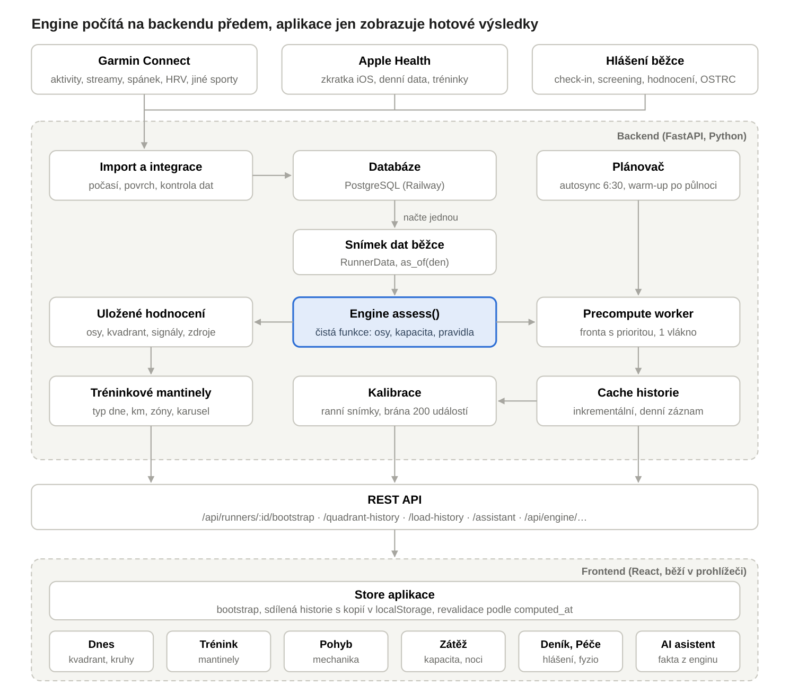
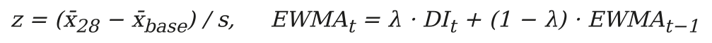
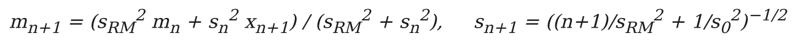
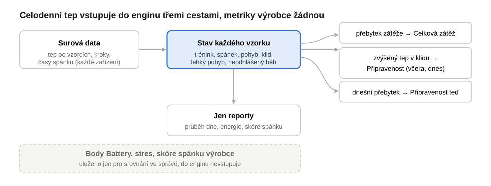
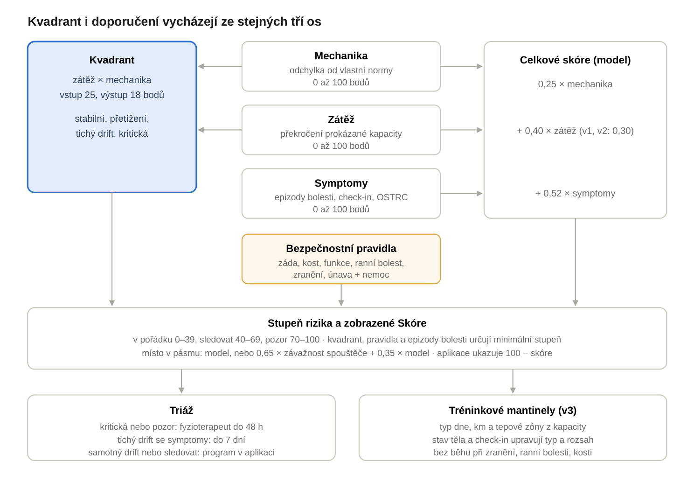

Dokument popisuje aktuální verzi hodnoticího enginu Došlap (v0.11.0, výchozí režim v3 „Kapacitní“) a způsob, jakým se jeho výstupy dostávají z backendu do aplikace. Ke každé části uvádí výzkum, o který se opírá, a výslovně odlišuje doložená tvrzení od odborných předpokladů produktového týmu.
Engine Došlap je rozhodovací podpora pro běžce a fyzioterapeuty. Z dat hodinek a z hlášení běžce každý den odhaduje, jak se tréninková zátěž, běžecká mechanika a příznaky odchýlily od běžcovy vlastní normy. Výsledek převádí na čtyři srozumitelné stavy a na denní tréninkové mantinely.
Dokument vznikl aktualizací dokumentace verze v0.10.4 (3. 10. 2026) podle zdrojového kódu nasazeného 4. 10. 2026 (engine v0.11.0, commit cddd66c). Od v0.10.4 proběhly dvě verze enginu. Verze v0.10.5 počítá do kanálu Intenzita i tvrdé minuty z kola a plavání. Verze v0.11.0 přestavuje roli spánku v Připravenosti podle studií přesnosti spánkových dat z hodinek: délka a kvalita spánku jsou samostatné signály, kvalita se počítá jen z efektivity spánku za tři noci a podíl hlubokého a REM spánku se už jen zobrazuje. Mimo engine přibyl na Tréninku průběh dnešního dne, trend ranní Připravenosti, odkaz na silový program v detailu posilování a v ranním reportu časy spánkových fází. Konstanty a vzorce jsou převzaté přímo z kódu. Kde se engine opírá o úsudek produktového týmu, a ne o publikovaný důkaz, text to uvádí jako pracovní předpoklad. Od této verze má dokumentace upravitelný zdroj v repozitáři (Documentation/engine), ze kterého se PDF generuje.
Citace pocházejí ze tří zdrojů: z předchozí dokumentace (ověřené reference), z dokumentu Literature Summary (Doslap_Literature_Summary.docx, 56 zdrojů, 2. 10. 2026, v aplikaci jako knowledge/summaries.json) a z komentářů ve zdrojovém kódu. Reference, které se objevují jen v kódu a jejichž bibliografické údaje nebylo možné ověřit, nesou hvězdičku (*). Práce o přesnosti spánkových dat, které cituje verze v0.11.0, byly dohledány 4. 10. 2026 v PubMed, PMC a u vydavatelů. Kde se nepodařilo ověřit všechny bibliografické údaje, nesou také hvězdičku.
Engine má tři režimy. Režim v1 (Standardní) a v2 (Citlivý) sdílejí osu zátěže složenou z přibližně patnácti nezávislých signálů, v2 navíc hodnotí mechaniku citlivějším regulačním diagramem. Režim v3 (Kapacitní) přebírá mechaniku z v2 a osu zátěže nahrazuje modelem prokázané kapacity. Od 27. 9. 2026 začínají všechny nové účty na v3, proto se dokument soustředí na něj a režimy v1 a v2 zmiňuje jen tam, kde se liší. Od v0.9.0 počítají Připravenost všechny tři režimy.
Evidence je u signálů označena stupni, které aplikace používá i v rozhraní: A znamená konzistentní prospektivní důkazy u běžců, B smíšené nebo vznikající důkazy a C mechanistickou úvahu, která generuje hypotézu. Části, které se od verze v0.10.4 změnily, jsou v textu označeny štítkem NOVĚ.
| Verze | Hlavní změna | Kapitola |
|---|---|---|
| v0.8.4 | bezpečnostní screening (záda, kost, nemoc), přísnější pravidla nočních dat, horko, tvrdý trénink podle RPE, kapacita po pauze | 5, 6, 8 |
| v0.8.5 | stav bolesti: rozhoduje dnešní check-in, bezbolestné dny ukončují omezení, slábnoucí body, cross-training podle bolestivého místa | 6, 8 |
| v0.8.6 | Připravenost klesá po dnešním tréninku podle relativní náročnosti, úplná synchronizace jiných sportů z Garminu | 5, 9 |
| v0.8.7–v0.8.11 | rozpad Připravenosti, historie aktivit po kanálech kapacity, vliv signálů v procentních bodech Skóre, zdroje signálů, desetinná čárka | 7, 13 |
| v0.9.0 | engine jako čistá funkce nad snímkem dat, matoucí vlivy v mechanice, nová křivka bodů podle RUNSAFE, potvrzování skoků, nižší váha mechaniky, bezpečnostní pravidla mimo kalibrované skóre, nezávislé výsledky pro kalibraci | 2–7, 11 |
| v0.9.1–v0.9.2 | historie nocí pro detail Připravenosti, zobrazené Skóre podle pásma místo pevné hodnoty 60 | 5, 7 |
| v0.9.3–v0.9.4 | odstupňované epizody bolesti, položky check-inu jen v Příznacích, check-in znovu řídí doporučení | 5, 6, 8 |
| v0.10.0 | bolest a zranění působí přímo na kapacitu, Připravenost podle typu tkáně | 5 |
| v0.10.1 | týdenní skóre srovnává nevstřebanou zátěž s obvyklým týdenním vrcholem téže veličiny | 5 |
| v0.10.2 | jen data pro zobrazení: příspěvek každé aktivity za 7 dní v kanálech kapacity, relativní náročnost nad nejtěžším během, stoupání po pásmech sklonu, plán závodu | 5, 8 |
| v0.10.3 | celodenní tep vlastní logikou pro všechna zařízení: zátěž mimo trénink nad obvyklý den v Celkové zátěži, včerejší zvýšený tep v klidu jako slabší signál Připravenosti | 3, 5 |
| v0.10.4 | den mimo trénink snižuje dnešní Připravenost jako trénink, dokud nepřijdou noční data | 5 |
| mimo verzi enginu (v0.10.2–v0.10.4) | doporučení po hotové aktivitě, týdenní cyklus a závazný limit v ukazatelích Tréninku, přepínač návratu po zranění, mapa zatížení těla, upozornění na nízkou kadenci, automatické vyřazení běhů na pásu, programy cviků a šestiměsíční silový program, ranní a večerní report s hodnocením od AI | 4, 5, 8, 10, 11 |
| v0.10.5 NOVĚ | do kanálu Intenzita se počítají i tvrdé minuty z kola a plavání (Z4+ proti maximu daného sportu), včetně odstupu tvrdých dnů | 5, 8, 9 |
| v0.11.0 NOVĚ | spánek v Připravenosti podle přesnosti dat z hodinek: délka a kvalita zvlášť, kvalita jen z efektivity za tři noci a s potvrzením od HRV nebo klidového tepu, spánkové fáze jen pro informaci, hranice 7 hodin jen do poznání vlastní normy, noci pod 6 hodin vždy; srovnání pravidel v0.10 a v0.11 | 5, 11, 13, 14 |
| mimo verzi enginu (od v0.10.4) NOVĚ | průběh dnešního dne a Připravenost během dne na Tréninku, trend ranní Připravenosti, doplnění celodenního tepu až 14 dní zpět, Runner's must-have v detailu posilování, časy spánkových fází v ranním reportu, objem jako běžný řádek kapacity, zápis jiného sportu jen z deníku, import z Apple Health bez zdvojených zdrojů, s fázemi spánku a noční HRV | 2, 3, 8, 10, 11, 14 |
Shrnutí: Dokument popisuje engine v3 tak, jak skutečně běží ve verzi v0.11.0, a u každého kroku uvádí míru jeho důkazní opory.
Došlap tvoří jeden proces FastAPI, který obsluhuje API pod /api/* a zároveň servuje sestavený frontend v Reactu. Data leží v PostgreSQL na Railway, lokálně a v testech v SQLite. Klíčovým principem je, že vše náročné se počítá na backendu ještě před zobrazením, takže obrazovka jen načte hotový výsledek.
Od verze v0.9.0 je engine čistá funkce. Data běžce se z databáze načtou jednou do neměnného snímku (RunnerData) a celý výpočet pracuje jen nad ním. Historie se počítá stejnou funkcí nad pohledem as_of(den), který obsahuje jen data známá k danému dni. Živý přepočet se tím zrychlil ze 347 na 112 ms a přepočet jednoho dne historie ze 136 na 50 ms (měřeno na běžci s 944 aktivitami).
Každá změna dat (synchronizace, check-in, hodnocení běhu, úprava) zavolá recompute_assessment. Ten spočítá hodnocení, uloží ho, označí cache historie jako neaktuální a zařadí běžce do fronty precompute workeru. Worker na pozadí dopočítá historii a denní záznam. Plánovač navíc v 6:30 spouští automatickou synchronizaci Garminu a po půlnoci předpočítá nový den pro všechny aktivní běžce. Výstupy enginu čte také AI asistent, který z nich skládá odpovědi a shrnutí. Engine sám jazykový model nepoužívá.
Při každé synchronizaci Garminu se navíc stahují detaily posledních dnů: noc (hypnogram, usnutí a probuzení), celodenní tep v rozlišení hodinek a kroky po 15 minutách. Uloží se do tabulky daily_details a modul dayload z nich spočítá den mimo trénink (kapitola 5). Dnešek a včerejšek se při každé synchronizaci stahují znovu a doplní pole, která byla ještě prázdná, takže synchronizace před nahráním noci už nenechá den trvale předběžný. NOVĚ Dny posledních dvou týdnů, kterým chybí celodenní tep, se doplňují zpětně (stejný den se zkouší znovu nejdřív po 20 hodinách), aby měl výpočet dne mimo trénink od začátku základnu. Aplikace sama spustí synchronizaci při otevření, pokud poslední proběhla před více než 30 minutami. Apple Health dodává celodenní tep a kroky z exportu za posledních 21 dní. Ranní a večerní report (kapitola 11) se skládá deterministicky z výstupů enginu. Jazykový model k němu jen dopisuje krátká hodnocení, která validátor kontroluje proti faktům, a když neprojdou, zůstane text z pravidel.

Shrnutí: Backend drží veškerou logiku a výpočty nad jedním snímkem dat, frontend je tenká vrstva, která hotová data načítá dřív, než je uživatel otevře.
Engine pracuje výhradně s daty jednoho běžce a vše porovnává s jeho vlastní normou, ne s populačními hodnotami. Proto nejprve data třídí tak, aby se srovnávaly jen srovnatelné běhy.
| Vstup | Zdroj | Použití v enginu |
|---|---|---|
| Aktivity | Garmin, Apple, ruční zápis | vzdálenost, čas, tempo, tep, převýšení, běžecká dynamika (vertikální poměr a oscilace, kontakt se zemí, symetrie, kadence), kolo, plavání a posilování |
| Detailní streamy | Garmin | výškový profil, histogram tepu, úseky běhu pro engine v2 a v3, rychlost v úsecích pro tvrdé minuty |
| Denní metriky | Garmin, Apple | spánek a jeho fáze, HRV, klidový tep. Body Battery, stres a skóre spánku od výrobce se ukládají jen pro srovnání ve správě, engine ani reporty je nepoužívají. |
| Celodenní tep a kroky | Garmin (tep po 2 min, kroky po 15 min), Apple (každý vzorek, kroky po 15 min) | zátěž mimo trénink, zvýšený tep v klidu, průběh dne a vlastní skóre spánku v reportech (kapitoly 5 a 11) |
| Hlášení běžce | aplikace | check-in (bolest na mapě těla, svalová bolestivost, únava, stres mimo trénink, hodnocení noci, nemoc, screeningové otázky), hodnocení běhu, OSTRC dotazník, závody, hlášení zranění |
| Počasí | Open-Meteo | teplota jako matoucí vliv v mechanice, sníh a led, horké běhy mimo normu tepu, předpověď horka pro Trénink |
| Profil | aplikace | věk, pohlaví, změřené maximum tepu nebo tep na laktátovém prahu (LTHR), anamnéza zranění |
Export z Apple Health. NOVĚ Export obsahuje kopie stejných dat ze všech zdrojů: z hodinek, z iPhonu i z aplikací, které do Zdraví zapisují. Kroky se proto berou po 15 minutách ze zdroje, který jich napočítal nejvíc, a noc z jednoho zdroje, přednostně z hodinek se spánkovými fázemi. Překrývající se záznamy se slučují, nikdy nesčítají. Z hodinek se ukládají fáze spánku (core jako lehký, hluboký, REM, bdění) a efektivita spánku a noc se zapisuje i do detailu pro ranní report. Apple Watch měří HRV jako SDNN několikrát denně. Engine bere přednostně měření z doby spánku, protože popisují zotavení podobně jako noční HRV jiných hodinek, a jen bez nich průměr dne. SDNN není totéž co RMSSD z Garminu, proto se HRV ze Zdraví srovnává jen s vlastní normou. U běhů se ukládá čas startu a stoupání z metadat tréninku. Když trénink nemá statistiku tepu (jiná aplikace, starší iOS), průměrný tep se spočítá z měření tepu v čase tréninku.
Terénní koše. Každý běh dostane kombinaci povrchu (silnice, terén, pás, dráha), sklonu podle čistého převýšení na kilometr (rovina, stoupání, klesání, kopcovitě) a pásma tempa. Mechanika se porovnává jen uvnitř stejného koše, protože běžecká dynamika se s terénem a rychlostí mění.
Pásma tempa podle běžce. Pevné hranice 4:30 a 5:30 min/km řadily všechny běhy pomalého běžce do jednoho pásma a všechny běhy rychlého do jiného. Od v0.9.0 dělí pásma běžcovy vlastní tercily tempa v základním okně (aspoň 12 běhů a rozestup aspoň 10 s/km), pevné hranice zůstávají jako záloha.
Korekce na tempo. Uvnitř koše se metrika přepočítá na běžcovo obvyklé tempo pomocí jeho vlastní citlivosti na rychlost. Sklon se odhaduje robustní metodou Theil–Sen, tedy mediánem sklonů mezi dvojicemi běhů (Sen, 1968*; Theil, 1950*), a to jen při aspoň 8 bězích a dostatečném rozpětí rychlostí. Bez korekce by pomalejší lehké běhy vypadaly jako změna techniky.
Teplota a zimní běhy. Chůze i běh se přizpůsobují podmínkám a u každého běžce jinak (Ahamed et al., 2018). Engine proto stejnou metodou Theil–Sen odhaduje běžcovu vlastní citlivost každé metriky na teplotu vzduchu (aspoň 8 běhů a rozpětí aspoň 8 °C) a odečítá ji. Běhy na sněhu, ledu nebo v mrznoucím dešti se proti základně nehodnotí, protože leží mimo její rozsah.
Výměna vybavení. Skok ve třech a více metrikách běžecké dynamiky ve stejný den (aspoň 2 SD a 80 % následujících běhů na stejné straně), při nezměněném tempu (rozdíl pod 4 %) a bez hlášené bolesti 7 dní kolem něj, je mnohem pravděpodobněji nová obuv, jiný senzor nebo aktualizace firmwaru než změna běžce (Willy, 2018). Základna mechaniky pak začíná od toho dne znovu. Pokud bolest kolem skoku hlášená je, skok zůstává viditelný, protože náhlá kompenzace je přesně to, co má engine zachytit.
Tepová maxima a zóny. Maximální tep je větší z odhadu 208 − 0,7 × věk (Tanaka et al., 2001) a nejvyššího pozorovaného průměrného tepu, případně změřená hodnota z profilu. Zóny se počítají z tepové rezervy (Karvonen et al., 1957). Pokud má běžec v profilu změřený tep na laktátovém prahu, zóny se řídí jím (Z4 od 95 % LTHR, Z5 od 100 %). Vnitřní zátěž je TRIMP (Banister, 1991) s koeficientem podle pohlaví, 1,92 pro muže a 1,67 pro ženy (Morton et al., 1990*). Protože tep se při krátkých úsecích zpožďuje (Seiler, 2010), tvrdé minuty se navíc počítají z úseků běhu, jejichž rychlost přepočtená na rovinu dosahuje rychlosti, kterou běžcova vlastní přímka tepu a rychlosti přisuzuje tepu Z4. Platí větší z obou počtů. Kopcovité úseky se přepočítávají na rovinu podle energetické náročnosti (Minetti et al., 2002) a horké běhy (pocitová teplota aspoň 24 °C) do normy tepu nevstupují.
Spolehlivost baseline. Základna mechaniky jsou běhy 84 až 29 dní zpět a srovnávací okno posledních 28 dní. Spolehlivost roste s počtem srovnatelných běhů a délkou historie a při výměně hodinek se sníží. Mechanické signály se počítají až od spolehlivosti 60 %.
Proč vlastní metriky místo metrik výrobce. Body Battery, skóre stresu a skóre spánku jsou proprietární výpočty jednoho výrobce s nezveřejněnou metodikou a u Coros nebo Apple neexistují nebo se počítají jinak. Od v0.10.3 proto engine používá jen surová data, která dodá každé zařízení (tep, kroky, časy a fáze spánku), a vše další počítá stejnou vlastní logikou. Běžec s Garminem a běžec s Apple Watch tak dostávají srovnatelné výstupy.
Shrnutí: Normalizace podle terénu, tempa, teploty a vybavení zajišťuje, že engine měří změnu běžce, a ne změnu podmínek. Od v0.10.3 engine pracuje jen se surovými daty zařízení, ne s metrikami výrobce.
Osa Mechanika (0 až 100 bodů) měří, jak se běžecká dynamika odchýlila od běžcovy normy ve srovnatelných podmínkách. Nejde o hodnocení techniky proti populačnímu ideálu, ale o detekci změny, která může signalizovat únavu nebo kompenzaci.
Odchylka od normy. V režimu v1 je odchylka z-skóre průměru posledních 28 dní proti průměru a SD základny v témže koši. Režimy v2 a v3 převádějí každý běh na index odchylky v jednotkách typické chyby běžce a sledují jejich EWMA s vahou λ = 0,15 a regulační mezí 2,75 SE, což je postup statistického řízení procesu. Thornton et al. (2019) popisují z-skóre i EWMA jako standardní nástroje monitoringu, včetně volby okna podle změn kondice.

Body. Každá metrika přidává body spojitě: body = min(max(z − mrtvá zóna, 0), strop) × váha. Počítá se jen odchylka v rizikovém směru, zlepšení body nepřidává.
| Signál | Rizikový směr | Váha | Strop | Stupeň |
|---|---|---|---|---|
| Vertikální poměr | růst | 17 | 4 SD | B |
| Kontakt se zemí (normalizovaný na kadenci) | růst | 13 | 4 SD | B |
| Kadence | pokles | 10 | 4 SD | C |
| Vertikální oscilace | růst | 10 | 4 SD | C |
| Posun symetrie kontaktu | změna proti vlastní normě | 22 | 3 p. b. | B |
| Odolnost proti únavě (decoupling) | růst trendu | 26 | 1,2 | C |
| Variabilita kontaktu mezi běhy | růst poměru SD | 14 | — | C |
Mrtvá zóna a váha podle přesnosti (fáze 2A). Výchozí mrtvá zóna je 0,2 SD. Jakmile má aplikace dost běžců, nahradí ji nejmenší smysluplná změna přepočtená do jednotek z, tedy SWC = 0,2 × SD mezi běžci. Metrika, jejíž typická chyba není menší než SWC, se počítá poloviční vahou, protože podle Thornton et al. (2019) takovou změnu spolehlivě nezachytí. Poloviční váha je vlastní návrh týmu.
Individuální rozptyl (fáze 1). SD terénního koše odhadnutá z mála běhů se stáhne ke sdružené SD opakovaných měření z celé databáze, váženo stupni volnosti. Oporou je zjištění Hecksteden et al. (2017), že individuální SD opakovaných měření nepřinesla oproti populační žádné zlepšení klasifikace. Přenos z krevních markerů na běžeckou dynamiku je předpoklad.
Váha mechaniky v celkovém skóre. Od v0.9.0 má osa Mechanika v celkovém skóre váhu 0,25 místo 0,38. Metriky, které hodinky měří v sagitální rovině, zatím nemají prokázaný vztah ke zranění (Mason et al., 2023; Neal et al., 2024) a důkazy o biomechanických rizikových faktorech jsou nanejvýš střední a většinou retrospektivní (Willwacher et al., 2022). Dokud kalibrace neukáže jinak, mechanika celkový stav informuje, ale neřídí. Ze stejného důvodu samotný tichý drift už neodkazuje k fyzioterapeutovi (kapitola 7).
Důkazní opora. Zdůvodnění jednotlivých metrik je v aplikaci popsáno v dokumentaci signálů (vztah vertikální oscilace k ekonomice a zatížení, růst kontaktu se zemí s únavou, asymetrie hodnocená jen proti vlastní normě). Tato vysvětlení v kódu zatím nemají úplné bibliografické citace, proto je dokument uvádí jako neověřená a doporučuje je doplnit. Stupeň C znamená, že prospektivní validace pro riziko zranění chybí.
Běhy na pásu. Pás mívá jinou kalibraci rychlosti, chybí na něm vítr a odraz od pásu je jiný než od země. Běh na pásu (povrch „pás“ nebo název typu „treadmill“, „běžecký pás“, „indoor run“) se proto z mechaniky automaticky vyřadí, když se kterákoli z pěti metrik (vertikální poměr, kontakt se zemí, kadence, vertikální oscilace, délka kroku) liší od mediánu běžcových běhů venku za 90 dní aspoň o 2,5 SD (při aspoň 6 bězích venku). Do zátěže běh dál počítá. V historii běhů nese štítek a běžec ho může do mechaniky vrátit. Hranice 2,5 SD je pracovní předpoklad.
Nízká kadence. Kadence pod 160 kroků za minutu dostane na kartě Kadence a v detailu Mechaniky na Dnes upozornění s vysvětlením a běhy pod touto hranicí jsou označené v historii. Zvýšení kadence o 5 až 10 % při stejném tempu v laboratoři snížilo zatížení kolene a kyčle v každém kroku (Heiderscheit et al., 2011*). U středoškolských běžců s kadencí pod 166 kroků za minutu byla častější zranění holeně (Luedke et al., 2016*). Že nízká kadence sama zranění předpovídá, doloženo není, a hranice 160 je pracovní práh aplikace. Upozornění body nepřidává a doporučuje zvyšovat kadenci nejvýš o 5 až 10 %, ideálně po konzultaci s fyzioterapeutem.
Shrnutí: Mechanika je individuální detektor změny se spojitým bodováním, očištěný o tempo, teplotu a vybavení. Protože prospektivní validace jejích metrik chybí, má od v0.9.0 v celkovém skóre nižší váhu.
Osa Zátěž v3 měří, o kolik nedávný trénink překročil zátěž, kterou běžec prokazatelně snesl. Vychází z rámce Bertelsen et al. (2017), podle kterého zranění vzniká, když kumulativní zátěž překročí kapacitu struktury, a kapacita sama kolísá podle zotavení.
| Kanál | Expozice | Váha | Stupeň | Hlavní opora |
|---|---|---|---|---|
| Objem | km běhu | 1,0 | B | Frandsen et al. (2025), Nielsen et al. (2014) |
| Intenzita | minuty nad 80 % tepové rezervy (Z4+), nebo podle tempa v úsecích; NOVĚ i tvrdé minuty kola a plavání proti maximu daného sportu (kapitola 9) | 0,9 | B | Neal et al. (2024), Paquette et al. (2020) |
| Klesání | metry klesání × (1 + 3,2 × sklon) | 0,8 | C | Gottschall a Kram (2005), McHugh (2003), Vernillo et al. (2017) |
| Stoupání | metry stoupání | 0,5 | C | Minetti et al. (2002), Vernillo et al. (2017) |
| Celková zátěž | všechny sporty: TRIMP ze zón daného sportu, jinak sRPE × minuty | 0,7 | B | Banister (1991), Paquette et al. (2020) |
| Silová zátěž | sRPE × minuty posilování × váha zaměření | 0,5 | C | Sweet et al. (2004), Doma et al. (2017), Blagrove et al. (2018) |
Kapacita pro jeden běh je největší snesená expozice za posledních 30 dní, starší běhy do 90 dní se započítávají s poločasem 30 dní. Běh následovaný do 72 hodin bolestí aspoň 3/10 se za snesený nepovažuje. Referenční rovinu „nejdelší běh za 30 dní“ přebírá engine z kohorty 5 205 běžců, v níž běh o více než 10 % delší zvyšoval riziko přetížení (Frandsen et al., 2025).
Skoky a jejich potvrzení. Jednotka větší než 1,3× kapacity je skok, ne důkaz kapacity. Na 14 dní kapacitu nezvyšuje a potom se počítá plně jen tehdy, když ji něco potvrdí, jinak poloviční vahou. Od v0.9.0 se skok posuzuje proti kapacitě bez této poloviční slevy. Dřív se tak pravidelný týdenní trénink stával skokem každý týden, protože každý ležel nad polovinou toho předchozího, a běžcův vlastní zvyk se nikdy nezapočítal jako snesený. Za potvrzení se nově považuje kterékoli z trojice: bezbolestné hlášení do 72 hodin, podobná jednotka (aspoň 85 %) snesená do 28 dní, nebo pasivní potvrzení, kdy trénink do 72 hodin pokračoval a bolest nebyla hlášena.
Týdenní kapacita. Týdenní kapacita je větší z průměrného týdne předchozích čtyř týdnů a 0,9 × nejlepšího bezbolestného sedmidenního okna předchozích šesti týdnů. Okna, která sama byla skokem (nad 1,3× předchozích čtyř týdnů), se vynechávají. Nejlepší okno starší než dva týdny ztrácí 15 % za každý další týden, takže po pauze nemůže stará špička držet kapacitu vysoko. Podle Gabbett (2016) jsou nejrizikovější právě prudké nárůsty po útlumu. Rychlost poklesu je pracovní předpoklad.
Nedostatečná kondice. Příliš málo běhání je samostatný rizikový faktor. V kohortě 7 391 běžců klesal podíl zraněných ze 71,8 % při nejvýše jednom běhu týdně na 24,7 % při sedmi bězích (Abrahamson et al., 2025*). Méně než 2 hodiny běhu týdně a méně než 2 jednotky týdně zvyšovaly riziko a obojí se sčítalo s dřívějším zraněním (Malisoux et al., 2015). Pokud běžec za poslední čtyři týdny průměrně běhal méně než dvakrát nebo méně než 120 minut týdně, engine zúží bezpečnostní rezervy na 0,8 násobek, s anamnézou zranění ještě o dalších 20 %, nejvýše na 0,4. Prahy pocházejí z kohort, násobky jsou pracovní předpoklad.
Kapacitu dne snižuje připravenost, faktor 0,7 až 1,0, odvozený z HRV, klidového tepu, délky a kvality spánku proti vlastní základně 8 až 56 nocí. Aplikace ji ukazuje jako skóre 20 až 100 % se slovním stavem plná (od 85 %), dobrá (od 65 %), snížená (od 45 %) a nízká. Odchylky signálů se skládají tak, že nejhorší se počítá celá, druhá z poloviny a třetí ze čtvrtiny. Od fáze 1 se HRV a klidový tep mohou hodnotit bayesovsky individualizovaným rozsahem už od třetí noci (Hecksteden et al., 2017).

Kolik stojí spánek. NOVĚ Příklady spočítané funkcemi enginu pro běžce s obvyklým spánkem 7,5 hodiny, efektivitou 94 % a ostatními signály v normě (kde není uvedeno jinak):
| Situace | v0.10.4 | v0.11.0 |
|---|---|---|
| jedna noc s 32 % hlubokého a REM spánku místo 42 % | 76 % | 100 % |
| jedna noc s efektivitou 88 % (asi 30 minut bdění navíc) | 60 % | 95 % |
| tři noci s efektivitou 88 % | 60 % | 90 % |
| tři noci s efektivitou 88 % a HRV za 7 dní o 1 SD pod normou | 48 % | 66 % |
| HRV za 7 dní o 1 SD pod normou, spánek v normě | 76 % | 76 % |
| tři noci o hodinu kratší | 80 % | 80 % |
| jedna noc 5,5 hodiny | 94 % | 94 % |
| obvyklý spánek 6,6 hodiny, běžný týden | 90 % | 100 % |
| obvyklý spánek 4,5 hodiny, běžný týden | 52 % | 52 % |
Ověření změny. NOVĚ Endpoint GET /api/runners/{id|me}/readiness-compare a skript python -m app.metrics.readiness_compare přepočítají tytéž dny podle pravidel v0.10.4 i v0.11.0 a porovnají je se zápisy únavy v check-inu. V simulaci 150 dní se třemi pětidenními bloky skutečné únavy (HRV −1,3 SD, klidový tep +1,2 SD, efektivita −1 SD) a s chybami hodinek (náhodný podíl fází, občas falešné bdění) zachytila verze v0.11.0 dny únavy stejně jako dřív (93 % z nich pod 85 %), ale v klidných dnech klesla pod 85 % v 16 % dní místo 31 %. Srovnání na skutečných uživatelích zatím chybí a je prvním krokem před další úpravou vah.
Od v0.10.0 působí bolest a zranění přímo na kapacitu běžeckých kanálů, nejen na body v Symptomech. Pravidla následují model sledování bolesti, podle kterého může zatěžování pokračovat při bolesti do 5/10, pokud do rána odezní a týden od týdne neroste. V randomizované studii to oproti klidu neuškodilo (Silbernagel et al., 2007).
| Stav | Účinek na kapacitu běžeckých kanálů |
|---|---|
| bolest v rámci modelu | kapacita drží bez rezervy nad prokázanou úrovní, rezerva se vrací, jak epizoda bolesti slábne |
| bolest nad modelem (nad 5/10 nebo rostoucí týden od týdne) | o krok zpět: kapacita × 0,75 podle síly epizody, u intenzity polovina tohoto snížení |
| ráno po běhu víc bolesti než během běhu, nebo aktivní zranění | dnes bez běhu (stropy 0), běh odběhnutý i tak se hodnotí proti polovině kapacity |
| návrat po vyléčeném zranění | týdenní kapacita nejvýš 50, 75 a 90 % průměrného týdne před zraněním v 1. až 3. týdnu, 14 dní bez tvrdých minut |
Celková zátěž a silový kanál zůstávají beze změny, takže cross-training zůstává k dispozici. Jednotky se posuzují podle stavu den předem, týdenní skóre podle sedmidenního průměru stavu a dnešní strop jednoho běhu podle dnešního stavu. Krok 0,75 a podíl intenzity jsou pracovní předpoklady.
Pro celkovou pohodu a připravenost je důležitá i zátěž mimo trénink: celý den na nohou, stěhování nebo dlouhá procházka. Od v0.10.3 ji engine počítá z celodenního tepu a kroků vlastní logikou, stejnou pro všechna zařízení (modul dayload).
Rozlišení dat. Engine nepracuje s patnáctiminutovými průměry, ale se vzorky tepu v rozlišení hodinek (Garmin každé 2 minuty, Apple každý vzorek). Každý vzorek pokrývá čas do dalšího, nejvýš 5 minut. Zátěž se sčítá po vzorcích, protože křivka TRIMP je konvexní a průměr za 15 minut by zátěž podhodnotil. Kroky přicházejí po 15 minutách.
| Stav vzorku | Podmínka | Použití |
|---|---|---|
| trénink | uvnitř zaznamenané aktivity a 10 minut po ní, kdy je tep ještě zvýšený | zátěž tréninku, ve dni se počítá jen pro průběh a energii |
| spánek | před probuzením a po usnutí podle hodinek | bez zátěže |
| pohyb | aspoň 20 kroků za minutu (asi 300 za 15 minut, chůze) | zátěž mimo trénink: TRIMP nad 25 % tepové rezervy × 0,5 |
| neodhlášený běh | aspoň 120 kroků za minutu a tep aspoň 45 % tepové rezervy mimo zaznamenanou aktivitu | počítá se plnou vahou, ne jako chůze |
| klid | méně než 3,3 kroku za minutu, vzhůru | zvýšený tep v klidu: o 8 % (mírně) nebo 15 % (výrazně) tepové rezervy nad vlastní referencí |
| lehký pohyb | mezi klidem a pohybem | ani zátěž, ani zvýšený tep |
Zátěž mimo trénink. Pohyb se počítá jako TRIMP (Banister, 1991) se stejným koeficientem podle pohlaví jako trénink, jen nad 25 % tepové rezervy (Karvonen et al., 1957) a s poloviční vahou. Poloviční váha je rozhodnutí produktového týmu z 3. 10. 2026: chůze je při stejném tepu méně náročná než běh. Do kanálu Celková zátěž nejde celá denní zátěž, ale jen přebytek nad mediánem 28 předchozích dní (aspoň 7 dní s celodenním tepem). Běžný denní život je součástí základny, na které vznikla kapacita, a historie před importem celodenního tepu ho neobsahuje. Kdyby se počítal celý, kapacita a nová expozice by se srovnávaly nesrovnatelně. Navíc se tedy počítá jen neobvykle aktivní den. V detailu Celkové zátěže se zobrazuje jako položka „Aktivita mimo trénink nad obvyklý den“ a v týdenním cyklu Tréninku snižuje zbývající rozpočet Celkové zátěže.
Zvýšený tep v klidu. Referencí je medián běžcova tepu v klidu za bdění z předchozích 14 dní (aspoň 3 dny). Skóre stresu výrobců vycházejí z denní HRV, kterou ne všechna zařízení dodávají. Samotný tep je hrubší a stoupá i s kofeinem, horkem, trávením nebo nemocí, proto má v Připravenosti nižší váhu (nejvýš 0,6 signálu, viz Připravenost výše). Všechny hranice v tabulce jsou pracovní předpoklady produktového týmu, protože literatura pro klasifikaci celodenního tepu z hodinek pro tento účel validované prahy nedává.

Mapa zatížení těla. Detail Celkové zátěže ukazuje, jak plná je za 7 dní kapacita jednotlivých oblastí těla. Plnost oblasti je vážený průměr plnosti běžeckých kanálů (zátěž 7 dní ÷ týdenní strop). Váhy jsou pracovní model z Literature Summary. Zranění spojená se skokem v objemu (patelofemorální bolest, IT pás, vnitřní holeň, boční kyčel) a zranění přisuzovaná tempu (Achillova šlacha, lýtko, plantární fascie, únavová zlomenina tibie, hamstringy, iliopsoas) vycházejí z Nielsen et al. (2014). Brzdění v kolenou a vyšší rázy do holeně při běhu z kopce a větší práce kyčle do kopce vycházejí z Vernillo et al. (2017). Lýtko nese většinu opory při všech rekreačních rychlostech, hamstringy a ohýbače kyčle přebírají práci až blízko sprintu (Dorn et al., 2012). Oblasti bolestivé za posledních 14 dní jsou zakroužkované. Mapa je zobrazení, do bodů ani do stropů nevstupuje.
Data pro zobrazení (v0.10.2). Každý kanál kapacity nese seznam aktivit posledních 7 dní s jejich příspěvkem (week7), takže detail ukazuje vodopád až k sedmidennímu součtu a stropu. Relativní náročnost běhu nese i to, o kolik překonal nejtěžší běh 8 týdnů (overMax). Stoupání se rozkládá po pásmech sklonu po 2,5 % stejně jako klesání. Na výpočet bodů tato data nemají vliv.
Vstřebávání. Týdenní zátěž je exponenciálně vážená akutní zátěž (Williams et al., 2017), která noc po noci slábne. Svaly a šlachy vstřebávají s poločasem 3,5 noci, kardiovaskulární kanály podle připravenosti (2 noci při 90 %, 3 při 75 %, 5 při 60 %, 8 při 45 % a méně, mezi kotvami lineárně). Poločasy jsou pracovní předpoklad týmu.
Body. Poměr r = expozice / (kapacita × připravenost) přidává body od tolerance +10 % na běh a +15 % na týden (Nielsen et al., 2014). Od v0.9.0 má křivka tvar vztahu dávky a účinku z kohorty Garmin- RUNSAFE, kde poměr rizik činil 1,64 pro běh o 10 až 30 % delší než nejdelší za 30 dní, 1,52 pro +30 až 100 % a 2,28 nad +100 % (Frandsen et al., 2025). Riziko tedy stoupne hned za tolerancí a do dvojnásobku zůstává přibližně stejné. Body proto plynule vystoupají na plató 12 bodů při +40 % a 14 bodů při 2× a teprve potom rostou dál (24 bodů při 2,5×, nejvýš 40). Stará lineární rampa dávala běhu o 20 % delšímu asi 3 body, desetinu bodů běhu o 150 % delšího, ačkoli se rizika liší méně než o polovinu. Tvar křivky je doložený, měřítko je pracovní předpoklad. Nejhorší kanál se počítá celý, druhý z poloviny a další ze čtvrtiny, takže jedna událost se nezapočítá třikrát. Velký skok zůstává viditelný jako latentní složka 1 až 4 týdny, kdy podle konsenzu MOV riziko po prudkém nárůstu vrcholí (Soligard et al., 2016).
Týdenní skóre srovnává stejné se stejným. Nevstřebaná týdenní zátěž v den jednotky skokově roste, přibližně na 1,3 až 1,5násobek jednotky. Ve v0.10.0 se dělila prostou sedmidenní kapacitou, takže tempový nebo dlouhý běh jednou týdně vycházel v den svého konání na 1,5 až 1,85× kapacity, každý týden znovu. Od v0.10.1 se srovnává s běžcovým obvyklým týdenním vrcholem téže veličiny (větší z průměru vrcholů čtyř referenčních týdnů a 0,9 × vrcholu nejlepšího bezbolestného okna). Zvyk tak vychází na 1,0 a počítá se jen skutečný nárůst nad něj. Při rovnoměrném denním tréninku se obě kapacity rovnají. Pro stropy, zbývající rezervu a doporučení v km, minutách a metrech zůstává prostá kapacita.
Doplňkové signály. Doplňkově působí čtyři signály stupně C:
Poměr ACWR zůstává jen kontextem, protože jeho koncepce je sporná (Impellizzeri et al., 2020) a v běžecké kohortě riziko nepředpovídal (Frandsen et al., 2025).
Anamnéza zranění. Anamnéza zranění zužuje tolerance. Hned po zranění je násobek 1,20, za 12 měsíců klesne na 1,06 a od v0.9.0 nekončí, ale do 24 měsíců doznívá k 1,02. Dřívější zranění zdvojnásobilo riziko v roční kohortě bez ohledu na jeho stáří (Desai et al., 2021) a zůstalo nejsilnějším prediktorem v rizikových modelech (van Poppel et al., 2021*). Průběh poklesu je pracovní předpoklad.
Shrnutí: Zátěž v3 nahrazuje patnáct nezávislých signálů jedním modelem kapacity, který používá i záložka Trénink, takže si doporučení a hodnocení nemohou odporovat. Od v0.10.3 navíc zahrnuje den mimo trénink: neobvykle aktivní den zvyšuje Celkovou zátěž a zvýšený tep v klidu i dnešní pohyb snižují Připravenost.
Osa Symptomy převádí hlášení běžce na body a má v celkovém skóre nejvyšší váhu, protože bolest je nejpřímější signál problému. Engine bolest nediagnostikuje, jen určuje, kdy má běžec ubrat nebo vyhledat fyzioterapeuta.
| Signál | Pravidlo | Opora |
|---|---|---|
| Bolest v check-inu | 8, 26 nebo 44 bodů podle intenzity (1, 3 a 6 z 10). Bez příplatků za opakování, to počítá epizoda bolesti. | — (odborně nastavené hodnoty) |
| Opakované bolestivé místo | epizoda bolesti místa (úroveň 0 až 1, viz níže). Body = úroveň × 15 až 39 podle intenzity, která úroveň nastavila. Místo musí být označeno aspoň 3 různé dny za 28 dní, u mužů Achillova šlacha a lýtko 2 dny. | Frandsen et al. (2025), Kakouris et al. (2021) |
| Obtíže napříč místy | počet dní s bolestí za 28 dní. Jen při aspoň dvou různých místech. | Frandsen et al. (2025) |
| Model sledování bolesti | bolest má do rána odeznít a nemá týden od týdne růst. Rostoucí bolest přidává 12 bodů. | Silbernagel et al. (2007) |
| Místo dřívějšího zranění | stačí jedno označení v libovolné intenzitě. Váhu řídí epizoda bolesti místa, už ne násobky 1,5 a 2 podle počtu označení. | Hulme et al. (2017), van Poppel et al. (2021)*, Desai et al. (2021) |
| OSTRC dotazník | aktivní zdravotní problém, omezení účasti nebo objemu. Podstatný problém zahrnuje i položku objemu (skóre aspoň 17). | Clarsen et al. (2013*, 2020) |
| Položky check-inu | jen zde: svalová bolestivost od 7/10 10 bodů, únava od 6/10 až 12 bodů, stres mimo trénink od 6/10 až 8 bodů, špatná noc 3 nebo 6 bodů | Saw et al. (2016), váhy pracovní předpoklad |
Epizody bolesti. Opakované označení téhož místa nesmí automaticky obnovit jeho váhu a označování během více běhů nesmí zvyšovat skóre, dokud běžec nenahlásí zranění. Od v0.9.3 má proto každé běžecky relevantní místo, levá a pravá strana zvlášť, epizodu s úrovní 0 až 1. První označení ji nastaví na 1. Pozdější označení se srovná s dřívějšími označeními téhož místa: pod jejich mediánem úroveň nemění, mezi mediánem a 75. percentilem ji zvedne o polovinu zbývající vzdálenosti k 1, nad 75. percentilem ji vrátí na 1. Den s check-inem nebo hodnocenou aktivitou, kde místo označené není, úroveň půlí, druhý takový den ji půlí znovu a třetí epizodu ukončí. Bez jakéhokoli hlášení se úroveň půlí každých 7 dní. Pravidla jsou rozhodnutí produktového týmu a pracovní předpoklad. Myšlenka, že bolest má odeznít, pochází ze Silbernagel et al. (2007).
Konec omezení. O dnešní bolesti rozhoduje ranní check-in, včerejší bolest platí jen do něj. Body starších hlášení slábnou s poločasem 7 dní a po sérii bez bolesti klesnou na třetinu. Sérii tvoří u měkkých tkání 2 bezbolestné check-iny, u míst typických pro přetížení kosti 5 dní bez bolesti, po kterých se podle Warden et al. (2021*) běh obnovuje. Poločas a třetina jsou pracovní předpoklady. Ve v3 se spánek z hodinek v Symptomech nepočítá, protože už působí přes Připravenost na kapacitu.
Nad logikou zátěže stojí bezpečnostní pravidla z rešerše literatury (v0.8.4). Od v0.9.0 nepřidávají body kalibrovanému modelu, ale určují minimální stupeň rizika (kapitola 7).
| Pravidlo | Spouštěč a důsledek | Opora |
|---|---|---|
| Varovné příznaky u bolesti zad | bolest zad se změnou močení nebo stolice či necitlivostí v rozkroku (okamžitě k lékaři), nebo s horečkou či po pádu (k lékaři). Stupeň „pozor“, doporučení pozastavena. | Finucane et al. (2020) |
| Varovné znaky přetížení kosti | bolest holeně nebo chodidla při chůzi, v klidu či v noci, nebo stále dřív během běhu. Stupeň „pozor“, bez běhu, fyzioterapeut do 48 h. | Warden et al. (2014) |
| Bolest v místě typickém pro kost | od 3/10, u žen od 2/10. Stupeň „sledovat“, dnes bez běhu, jiný sport jen bez bolesti. U kosti se bolest nepřechází, na rozdíl od šlachy. | Warden et al. (2014), Toczyłowska et al. (2025), Hoffman a Krishnan (2014) |
| Omezení funkce, akutní přetížení, ranní bolest, aktivní zranění | minimální stupeň „sledovat“ nebo „pozor“ | — (produktová pravidla), Silbernagel et al. (2007) |
| Únava, nemoc a pokles výkonu | aspoň dvě ze tří: únava od 6/10 ve 4 dnech ze 14, aspoň 2 dny nemoci za 28 dní, tep při obvyklém tempu o 5 a více úderů vyšší ve 3 bězích. Aplikace nepojmenovává žádný stav, jen doporučí vyšetření. | Jeukendrup et al. (2024) |
Regiony kolena se slučují do jednoho, protože běžci podoblasti kolena spolehlivě nerozlišují a vlastní hlášení zranění se od diagnózy lékaře často liší (Smits et al., 2019). Anamnéza zranění je nejrobustnější známý rizikový faktor běžeckých zranění (Hulme et al., 2017), proto v režimech v1 a v2 násobí body faktorem 1,02 až 1,20 a ve v3 zužuje tolerance kapacity.
Shrnutí: Symptomy nesou nejvíce váhy. Body od v0.9.3 sledují průběh bolesti na každém místě, ne počet hlášení, a bezpečnostní pravidla stojí mimo kalibrovaný model jako pevné pojistky.
Tři osy se skládají do dvou pohledů. Kvadrant popisuje povahu stavu a celkové skóre jeho závažnost. Z obou pak vychází stupeň rizika, triáž k fyzioterapeutovi a tréninkové mantinely.

Kvadrant používá hysterezi: osa se stane zvýšenou při 25 bodech a zůstane tak, dokud neklesne pod 18. Bez hystereze stav na zpětných testech střídavě přeskakoval. Hodnoty 25 a 18 jsou odborně nastavené a jejich kalibraci na skutečné události řeší kapitola 13. Stupeň rizika nikdy neodporuje kvadrantu, takže přetížení nebo tichý drift nejsou nikdy „nízké riziko“.
Model a zobrazení. Od v0.9.0 engine odděluje modelové skóre (overallModel, sympModel), které vidí kalibrace, od zobrazeného. Bezpečnostní pravidla, kvadrant, opakovaná bolest, model sledování bolesti a shluk únavy s nemocí určují minimální stupeň. Ve v0.9.0 to znamenalo, že každý označený den ukazoval přesně Skóre 60 a běžné dny ležely v úzkém pásmu 92 až 100, takže šestiměsíční graf se téměř nehýbal. Od v0.9.2 určuje stupeň pásmo (v pořádku 0 až 39, sledovat 40 až 69, pozor 70 až 100). Stupeň, kterého model dosáhl sám, ukazuje modelovou hodnotu a běžné dny prochází křivka, která rozprostře dolní konec pásma. Stupeň zvýšený spouštěčem umístí den v pásmu podle 0,65 × závažnost spouštěče + 0,35 × model, nikdy pod modelovou hodnotu. Od v0.10.0 platí totéž i tehdy, když model dosáhne stejného stupně sám, takže víc zátěže nikdy neukáže lepší Skóre. Jde o volbu zobrazení, ne o kalibraci.
Vliv signálů. Každý signál nese, o kolik procentních bodů snižuje zobrazené Skóre, po zohlednění anamnézy, stropů os a podílu modelu na zobrazené hodnotě. Rozkliknutý signál ukáže záznamy, ze kterých vychází (aktivity, check-iny, hodnocení běhů, noci), a kde engine signál mezi záznamy dělí, i přibližný podíl každého z nich.
Triáž. Od v0.9.0 samotný tichý drift mechaniky k fyzioterapeutovi neodkazuje, protože metriky hodinek nemají prokázaný vztah ke zranění (Mason et al., 2023; Neal et al., 2024). Zůstává ve stupni „sledovat“ s lehčím doporučením a programem v aplikaci. Vyšetření do 7 dní engine doporučí, jen když drift potvrzují symptomy (osa Symptomy nad 25 bodů nebo opakovaná bolest na jednom místě).
Vodopád Připravenosti. Detail Připravenosti ukazuje vodopád od včerejšího rána (nebo od plné připravenosti, když včerejšek chybí): každý signál, který se od včerejška posunul blíž k normě (zeleně) nebo dál od ní (červeně), pak „Dnes ráno“, dnešní trénink, den mimo trénink a „Teď“. Body v krocích sledují pravidlo skládání (nejsilnější signál celý, druhý z poloviny, třetí ze čtvrtiny), takže se sčítají na zobrazené skóre. Trend Připravenosti zobrazuje posledních 60 dní.
Shrnutí: Všechny výstupy, které běžec vidí, vycházejí ze stejných tří os a bezpečnostních pravidel, a proto si navzájem neodporují. Kalibrace přitom pracuje s čistým modelem bez pojistek.
Záložka Trénink utrácí zbývající kapacitu z kapitoly 5. Nejde o trenéra ani periodizovaný plán, ale o bezpečné rozmezí pro dnešní den.
sysKm) a tvrdé minuty. Když Celková zátěž omezí kilometry, klesání a stoupání se omezí s nimi podle běžcova kopcovitějšího obvyklého poměru (90. percentil metrů na kilometr). Úsek oblouku za závazným limitem je vyšrafovaný a oranžová značka ukazuje, kolik dnes zbývá. Karta bezpečného nejdelšího běhu ukazuje jen strop jednoho běhu s vysvětlením.Doporučení se počítá při každém přepočtu hodnocení a je označeno jako předběžné, dokud nepřijdou ranní data o spánku a HRV.
Detail závodu nabízí tři úrovně úsilí: trénink, střední a naplno. Ke každé uvádí tempo, čas, tep, vnímanou námahu a krátkou strategii. Před závodním týdnem ukazuje odhad ze současné kondice, doporučenou úroveň až v závodním týdnu podle priority závodu, stropu jednoho běhu, týdenního rozpočtu, připravenosti a bolesti. Poznámka v den závodu jmenuje skutečný důvod omezení (bolest v posledních dnech nebo připravenost pod minimem pro závod).
Shrnutí: Mantinely jsou druhý pohled na tentýž model kapacity a jejich omezení jsou zaměřená na ochranu, ne na výkon.
Verze v0.8.3 rozšířila kapacitní engine o kolo, plavání a posilování. Návrh vychází z rámce, který odděluje fyziologickou a biomechanickou dráhu zátěže (Vanrenterghem et al., 2017), a z principu, že kapacita je specifická pro konkrétní tkáň (Bertelsen et al., 2017). Každý sport proto přispívá do celkové zátěže, ale do běžeckých kanálů objemu, klesání a stoupání vstupuje pouze běh.
| Sport | Výpočet zátěže | Opora |
|---|---|---|
| Běh | TRIMP z tepu proti běžeckému maximu | Banister (1991) |
| Kolo | TRIMP proti maximu pro kolo, bez tepu sRPE × minuty | Millet et al. (2009) |
| Plavání | sRPE × minuty, bez hodnocení TRIMP proti plaveckému maximu | DiCarlo et al. (1991), Foster et al. (2001) |
| Posilování | sRPE × minuty, tep se nepoužívá | Sweet et al. (2004) |
Tvrdé minuty z kola a plavání. NOVĚ Od v0.10.5 se do kanálu Intenzita počítají i minuty kola a plavání v Z4+, a to proti maximu daného sportu a s prahem podle LTHR posunutým o stejný rozdíl. Kanál Intenzita popisuje kardiovaskulární zátěž vysoké intenzity, která není vázaná na konkrétní tkáň, a rozložení tvrdé a lehké práce se posuzuje napříč vytrvalostními sporty (Seiler, 2010). Tvrdá jízda nebo plavání se proto počítá do týdenních tvrdých minut, do kapacity jedné jednotky a do odstupu tvrdých dnů. Bez detailních dat se minuty odhadují z průměrného tepu. Plná váha těchto minut je pracovní předpoklad.
Tepová maxima a převod sRPE. Maximum pro kolo je bez vlastních dat o 8 tepů nižší než běžecké, protože u triatletů bývá maximum na kole o 6 až 10 tepů nižší (Millet et al., 2009). Pro plavání se odečítá 12 tepů podle doporučení DiCarlo et al. (1991), kteří naměřili o 11 tepů nižší maximum než při běhu na páse. Jakmile má běžec alespoň pět jednotek daného sportu s tepem, maximum se zvýší podle jeho nejtěžších jednotek. Session-RPE (Foster et al., 2001) se převádí na jednotky TRIMP koeficientem, který se odhaduje regresí přes počátek z běžcových běhů se známým tepem i hodnocením. Dokud není k dispozici osm takových běhů, platí výchozí hodnota 0,45 odvozená z TRIMP typického klidného a tempového běhu. Jde o pracovní předpoklad.
Silová zátěž. Šestý kanál sčítá sRPE × minuty posilování. Cvičení dolní poloviny a celého těla se počítá plně, horní polovina s váhou 0,3 a neurčené zaměření s váhou 0,7 (pracovní předpoklady). Kapacita se odvozuje stejně jako u ostatních kanálů. Kanál má váhu 0,5 a stupeň důkazu C, protože jeho opora je nepřímá. Smyslem je zachytit prudký skok, například první plyometrickou jednotku po delší pauze.
Přenos únavy do běhu. Jednorázový silový trénink může zhoršit vytrvalostní výkon na několik hodin až dní. Běžecká ekonomika a čas do vyčerpání bývají zhoršené 24 až 48 hodin a svalová síla až 72 hodin (Doma et al., 2017). Dopad je výraznější v intenzitě nad anaerobním prahem, zatímco při 70 % prahu se vnímaná námaha nemění. Engine proto po těžkém posilování dolní poloviny (sRPE alespoň 7, nebo těžký či plyometrický trénink nohou) snižuje strop minut v Z4+ v den tréninku a následující den na polovinu a třetí den na tři čtvrtiny. Kvalitní trénink v den posilování a den po něm nedoporučuje, klidný a dlouhý běh zůstávají. Opakovaný trénink podle stejného přehledu ochranu běžeckého výkonu nezaručuje, a proto engine dopad u pravidelně posilujících nesnižuje. Velikost snížení je pracovní předpoklad.
Mechanika po posilování. Kinematika běhu se mění 24 až 48 hodin po odporovém cvičení dolních končetin (Doma et al., 2017). Běhy v den těžkého posilování nohou a dva následující dny proto vstupují do driftu mechaniky s poloviční váhou a v historii běhů nesou štítek „po posilovně“. Kolo podle Millet et al. (2009) následnou mechaniku běhu mění jen minimálně, a proto se tlumení na něj nevztahuje.
Doporučení v Tréninku. Trénink nabízí tři typy dne s dávkou.
Výběr podle bolestivého místa. Od v0.8.5 engine volí jiný sport podle bolestivého místa. Kolo vynechá při bolesti lýtka (lýtkové svaly patří při šlapání k nejvíc zapojeným, Ericson et al., 1985*), IT pásu a úponu hamstringů, u třísel ho připustí jen bez bolesti a k plavání přidá úpravu, například pull- buoy nebo plavání bez prsového kopu.
Data. Posilování, kolo a plavání se importují z Garminu i Apple Health. Synchronizace Garminu se dívá 14 dní před nejnovější aktivitu a jednou na běžce stáhne 180 dní zpět, takže dorazí i starší jízdy, plavání a posilování (jen souhrn). Duplicitní záznamy pod jiným identifikátorem se přeskočí a rozpoznávají se i české názvy tréninků z Apple Health. Trénink bez hodinek lze zapsat v Deníku s hodnocením náročnosti a pocitem nohou, což odpovídá rozlišení dechové a svalové náročnosti podle Vanrenterghem et al. (2017). U posilování se zapisuje zaměření a typ. Pozdější import stejné jednotky ruční zápis převezme i s hodnocením.
Shrnutí: Cross-training zvyšuje celkovou zátěž podle fyziologické náročnosti daného sportu, běžecké kanály nechává beze změny a posilování přidává vlastní kanál a krátkodobý přenos únavy do intenzity a mechaniky. Doložená jsou směrová pravidla a časová okna, konkrétní velikosti snížení a váhy zůstávají pracovními předpoklady ke kalibraci.
Programy cviků v Péči nejsou součástí hodnocení, ale jejich dokončení se zapisuje jako silová aktivita se session-RPE (Foster et al., 2001), takže vstupuje do kanálu Silová zátěž a do Celkové zátěže. Běžec může mít aktivních víc programů najednou a přepínat mezi nimi. Každý cvik je samostatný modul se sériemi k odškrtnutí, časovačem pro výdrže a pohyblivou figurou. Po dokončení dne se karta uzavře souhrnem (týden, zbývající týdny, odcvičené dny, další trénink).
Program má dvě session, A (těžká síla) a B (odolnost: práce na jedné noze, reaktivní a šlachová cvičení), které se střídají dvakrát týdně s odstupem aspoň 48 hodin.
| Session | Cviky |
|---|---|
| A · Síla | pogo poskoky, monster walk, bulharský dřep, rumunský mrtvý tah, sed s výponem těžce, Copenhagen plank, Pallof press |
| B · Odolnost | poskoky na jedné noze, step-down, mrtvý tah na jedné noze, výpon na jedné noze s pomalou fází dolů, zvedání špiček, boční plank s abdukcí, dead bug |
Fáze. 26 týdnů v pěti fázích: základ a technika (1. až 4. týden, cílové RPE 5 až 6, dvě až tři opakování v záloze), síla a objem (5. až 10., RPE 6 až 7), těžká síla (11. až 18., RPE 7 až 8), reaktivní síla (19. až 24., RPE 7 až 8) a udržení s kontrolním testem (25. až 26., RPE 6 až 7). Po základní fázi je odlehčovací každý čtvrtý týden, nebo týden, kdy má běžecký plán odlehčení, ladění před závodem nebo návrat po zranění: o sérii méně, spodní hranice opakování, stejná zátěž.
Výběr session. A a B se střídají, ale A přijde jen v den, který ji unese: běžecký plán není v odlehčovacím, ladicím ani návratovém týdnu, osy Zátěž a Mechanika jsou pod prahem, Celková zátěž má na dnešek aspoň čtvrtinu denního rozpočtu, připravenost je aspoň 55 %, dnes není doporučený odpočinek a včera ani dnes nebyl tvrdý nebo dlouhý běh (RPE aspoň 7 nebo aspoň 80 minut) a zítra nečeká tvrdý běh. Jinak přijde B a A se posune. Oporou je, že těžká silová práce na nohy zhoršuje intenzivní běh v následujících 24 až 48 hodinách (Doma et al., 2017).
Progrese podle pocitu. Na konci session běžec vybere lehké, akorát, těžké nebo „něco bolelo“ (převod na session-RPE 4, 6, 8 a 7). Každá session má úroveň 0 až 2, která volí počet opakování nebo sekund v rozsahu fáze. Lehké posune o úroveň výš, akorát dvakrát po sobě také, těžké dvakrát po sobě o úroveň níž a bolest níž hned. Na horní hranici rozsahu se přidá zátěž a opakování začnou znovu dole (dvojitá progrese). Nová fáze začíná na spodní hranici. Progrese podle pocitu na konci tréninku vychází ze session-RPE (Foster et al., 2001) a ze škály opakování v záloze (Helms et al., 2016*). U bolesti platí model sledování bolesti: při cviku do 5 z 10 a do rána musí odeznít (Silbernagel et al., 2007).
Na Tréninku. NOVĚ Detail posilování v karuselu Tréninku ukazuje dnešní session programu s cviky a dávkami, nebo nabídku programu, a odkazuje přímo na něj v Péči. Obecný seznam cviků z doporučení zmizel.
Dávka proti kapacitě. Délka session se odhaduje z rozcvičení (8 minut), práce (4 s na opakování nebo délka výdrže, obě strany), pauz a přechodů. Dvě session týdně × cílové RPE se porovnají se sedmidenním stropem kanálu Silová zátěž. Když by ho přesáhly, ubírají se série (nejvýš na polovinu), dokud se nevejdou.
Důkazní opora. Silový trénink snížil výskyt sportovních zranění na méně než třetinu a přetěžovacích zhruba na polovinu (Lauersen et al., 2014), s větším účinkem při větším objemu a intenzitě (Lauersen et al., 2018*). U vytrvalců zlepšuje ekonomiku běhu, nejlépe těžká zátěž dvakrát až třikrát týdně (Blagrove et al., 2018; Rønnestad & Mujika, 2014). Metaanalýza 38 studií s 894 běžci potvrdila přínos vysoké, submaximální, plyometrické i kombinované silové zátěže pro výkon (Llanos-Lagos et al., 2024). Šlachy se přizpůsobují vysoké zátěži s pomalým a delším zatížením (Bohm et al., 2015*). Výběr cviků, rozsahy opakování, délka fází a kroky zátěže jsou pracovní předpoklady produktového týmu.
Knihovna programů obsahuje vedle silového programu programy pro konkrétní bolestivá místa, které aplikace nabízí podle označení na mapě těla. Patří sem program pro tendinopatii třísel (stlačování míče, addukce vleže na boku, Copenhagen plank; Hölmich et al., 1999*; Harøy et al., 2019*) a program pro úpon břišních svalů v dolní části břicha (Weir et al., 2015*; Hölmich et al., 1999*). U bolesti stydké kosti, bolesti při kašli nebo vyklenutí v tříslech program doporučí vyšetření. Dávkování je u všech programů označené jako pracovní předpoklad a programy čekají na odborné posouzení fyzioterapeutem.
Shrnutí: Programy cviků jsou doplněk enginu, který se do něj vrací přes silovou zátěž. Silový program se řídí stejným týdenním plánem a kapacitou jako běh a jeho progrese sleduje pocit na konci tréninku.
Reporty převádějí výstupy enginu do příběhu o dni. Ranní report se otevře sám mezi 6:00 a 10:00 po synchronizaci noci, večerní mezi 20:00 a půlnocí, každý jednou denně. Po zavření zůstane do konce okna jako ikona slunce nebo měsíce vedle stavu na Dnes. Report je sada listů přes celou obrazovku. Každý list začíná krátkým hodnocením s tipem a poslední list nabízí otázky pro AI asistenta.
| List | Ranní report | Večerní report |
|---|---|---|
| úvod | připravenost, spánek a dnešní doporučení | energie od rána do teď, zátěž dne |
| 2 | spánek: vlastní skóre, průběh noci (hypnogram; NOVĚ s celkovým časem každé fáze a časem a délkou fáze pod prstem), z čeho se skóre skládá, posledních 7 nocí | váš den: průběh dne v řádcích stavů s energií, minuty tréninku, pohybu, zvýšeného tepu a klidu, kroky po hodinách |
| 3 | noc → připravenost: HRV, klidový tep, spánek a vodopád Připravenosti | zátěž dne: trénink a mimo trénink proti obvyklému dni a dnešním limitům |
| 4 | včera a tento týden: průběh včerejška, zátěž po dnech, co se ještě vstřebává | co ovlivní zítřek: vlivy ↓ / ↑ / → a plán na zítřek |
| 5 | dnešní trénink: na co si dát pozor a proč právě takhle | týden: odběhnuto a návrh na zbytek týdne |
| 6 | otázky | dnes večer: cíl spánku, čas do postele, poslední káva; otázky |
Vlastní skóre spánku. Skóre 0 až 100 se skládá z délky (40 bodů, poměr k potřebě, potřeba je běžcova norma, nejméně 7 hodin), efektivity (20 bodů, lineárně od 80 do 95 %), podílu hlubokého a REM spánku proti vlastní normě (20 bodů), pravidelnosti času usínání (10 bodů, odchylka do 90 minut) a klidnosti (10 bodů, ubývá od druhého probuzení). Když některá část chybí, skóre se přepočte na dostupné body. Hranice 7 hodin vychází z konsenzu pro dospělé (Watson et al., 2015), nižší váha spánkových fází z toho, že je hodinky rozlišují jen středně přesně (de Zambotti et al., 2019*). Váhy částí jsou pracovní předpoklad. Skóre je jen zobrazení. Engine dál počítá spánek v Připravenosti podle kapitoly 5. NOVĚ Podíl hlubokého a REM spánku se od v0.11.0 počítá jen v tomto zobrazeném skóre, ne v Připravenosti (kapitola 5).
Energie. Křivka energie 0 až 100 začíná ranní připraveností. Trénink a zátěž mimo trénink ji snižují úměrně své zátěži, zvýšený tep v klidu po minutách a klidné bdění ji mírně dobíjí. Měřítko se odvozuje z běžcových dní: 75. percentil denní zátěže posledních 7 dní ubere 40 bodů, takže jeden běh nevyčerpá celou nádrž. Je to vizualizace bez vlastního výzkumného podkladu, engine používá její části, ne křivku samotnou.
Večerní doporučení ke spánku. Cíl spánku je běžcova norma (7 až 9,5 hodiny), o 30 minut víc před tvrdým nebo dlouhým dnem a až o hodinu víc při spánkovém dluhu. Čas do postele se dopočítá z mediánu běžcova probuzení. Doporučení vychází z konsenzu, podle kterého sportovci potřebují 7 až 9 hodin a při velké zátěži víc (Walsh et al., 2021*), a ze zjištění, že kofein i 6 hodin před spaním narušuje spánek (Drake et al., 2013*). Aritmetika času a rozložení zbytku týdne jsou pracovní předpoklady.
Hodnocení od AI. Ke každému listu napíše jazykový model 2 až 3 věty: zhodnocení a jeden proveditelný tip. Dostane jen fakta daného listu. Každý text projde stejným validátorem jako denní komentář asistenta: každé číslo musí být ve faktech, žádné diagnózy ani léky, nic náročnějšího než dnešní doporučení, česky, 8 až 80 slov. Text, který neprojde, nahradí text z pravidel. Hodnocení se ukládá podle dne, typu reportu a otisku faktů, takže se při každém otevření negeneruje znovu. Pro angličtinu se texty překládají.
Shrnutí: Reporty jsou deterministický pohled na výstupy enginu doplněný vlastními metrikami ze surových dat. AI v nich jen formuluje hodnocení, které musí sedět s fakty, jinak zůstane text z pravidel.
Historie stavu za posledních 183 dní pohání historii kvadrantu na Dnes a grafy trendů v Pohybu a Zátěži. Každý den historie vzniká opětovným spuštěním enginu s dnem připnutým do minulosti nad pohledem as_of(den), který obsahuje jen data známá k tomu dni.
Přepočet jednoho dne historie trvá od v0.9.0 asi 50 ms místo 136 ms. V produkci trvá načtení hotové historie přibližně 150 ms včetně sítě.
Shrnutí: Výpočetně náročná historie je vždy připravená předem a její správnost hlídá test, který porovnává inkrementální a plný přepočet.
Hranice, váhy a pásma enginu jsou dnes nastavené odborným úsudkem podle literatury a ověřené na zpětných testech, ne na skutečných zraněních uživatelů. Kalibraci připravuje pětifázový plán, jehož metodika vychází ze čtyř studií.
| Fáze | Obsah | Opora |
|---|---|---|
| 0 | denní záznam výstupů enginu, zdravotní události, záznam upozornění s odpovědí běžce | Bache-Mathiesen et al. (2021), doporučení více než 200 zranění |
| 1 | bayesovské individuální referenční rozsahy | Hecksteden et al. (2017) |
| 2A | typická chyba a SWC pro metriku a model hodinek | Thornton et al. (2019) |
| 2B | spojité a neklesající bodové funkce bez skokových hranic | Carey et al. (2018), Bache- Mathiesen et al. (2021) |
| 3 | slovní stav metrik a osobní rozsah v aplikaci | Thornton et al. (2019), Hecksteden et al. (2017) |
| 4 | logistická regrese s restricted cubic splines, křížová validace po běžcích, Brierovo a logaritmické skóre, kalibrační tabulka | Carey et al. (2018), Bache- Mathiesen et al. (2021) |
Srovnání pravidel. NOVĚ Dokud kalibrace na skutečných událostech nemá data, ověřuje se každá změna vah přepočtem historie podle starého i nového pravidla. Pro Připravenost to od v0.11.0 dělá readiness_compare (kapitola 5): porovná průměr, dny pod 70 %, dny, kdy spánek ubral aspoň 10 bodů, a souvislost se zápisy únavy v check-inu. Simulace se známými bloky únavy ukazuje, zda změna nepřišla o skutečné poklesy.
Výsledky nezávislé na prediktorech. Od v0.9.0 engine rozlišuje primární a sekundární výsledky. Primární výsledky jsou definované nezávisle na vstupech enginu: hlášení zranění běžcem, závěr fyzioterapeuta, OSTRC s podstatným problémem (účast, objem nebo výkon aspoň 17; Clarsen et al., 2013*) a ztráta tréninku. Ztráta tréninku je běžecky relevantní bolest aspoň 3/10 nebo hlášené zranění, po kterých následuje aspoň 7 dní bez běhu, u běžce, který předtím běhal aspoň dvakrát týdně a během toho týdne dál synchronizoval data. Sekundární výsledky jsou dřívější definice: jakékoli omezení v OSTRC a bolest aspoň 3/10 na stejném místě dvakrát do 7 dní. Hlášení bolesti jsou zároveň vstupem osy Symptomy, takže výsledek z nich postavený by se zčásti předpovídal sám, a proto slouží jen pro sekundární analýzu.
Záznam a označení dnů. Ranní snímek enginu se zmrazí, jakmile běžec ten den běží, protože hodnocení přepočtené po běhu už běh obsahuje a předpovídalo by výsledek z vlastní expozice. Snímek obsahuje modelové skóre bez bezpečnostních pojistek, spojité vstupy a doporučení dne s jeho dodržením. Události blíž než 14 dní tvoří jednu epizodu a výsledkem dne je začátek epizody následující den nebo do 7 dní. Dny, jejichž sledované okno ještě nepokrývají data (posledních 7 dní nebo po ukončení synchronizace), se cenzurují, místo aby se počítaly jako bez události. Vedle denních dat vzniká i soubor po bězích, ve stejném měřítku jako analýza Garmin-RUNSAFE, s poměrem běhu k nejdelšímu běhu za 30 dní (Frandsen et al., 2025). Kalibrace porovná objektivní model s modelem symptomů.
Definice i okna jsou návrh týmu k posouzení fyzioterapeutem. Populační priory se zapínají od 30 běžců a kalibrační report od 200 událostí, přičemž žádný běžec nesmí tvořit více než 5 % událostí. Model s náhodným interceptem běžce se fituje mimo aplikaci z exportu dat.
Shrnutí: Mechanismus kalibrace je hotový, od v0.9.0 sbírá výsledky nezávislé na vstupech enginu a hlídá cenzurování dat. O skutečné změně prahů ale rozhodnou až data a tým spolu s fyzioterapeutem.
Frontend komunikuje s backendem výhradně přes REST API s přihlášením přes cookie a ochranou CSRF u zapisujících požadavků. Každý dotaz na běžce ověřuje, zda k němu má uživatel přístup, a běžec smí zapisovat jen svá data.
| Obrazovka | Hlavní endpointy | Co zobrazuje |
|---|---|---|
| Dnes | GET /api/runners/{id}/bootstrap, /quadrant-history, /alerts/pending | kvadrant, kruhy Skóre, Připravenosti a os, signály s vlivem v p. b. a jejich zdroji, historie stavu, otázka „Sedí to?“ |
| Trénink | bootstrap (pole assessment.guidance), PUT /cycle (i přepínač návratu skip_return), /races, PATCH /races/{id}, GET /races/{id}/plan, NOVĚ GET /day-today | karusel typů dne, týden v cyklu na obloucích, kilometry, zóny, detail a plán závodu, průběh dnešního dne a Připravenost během dne |
| Reporty | GET /api/runners/{id}/report? kind=morning|evening, POST /report/ai | listy ranního a večerního reportu, hodnocení od AI |
| Pohyb | bootstrap, /quadrant-history, /run- history, /run-segments | metriky mechaniky, slovní stav, osobní rozsah, trend |
| Zátěž | bootstrap (pole capacity, readiness), /quadrant-history, /load-history | kanály kapacity, trend Připravenosti a noci, historie aktivit po kanálech |
| Deník a Péče | /activities, /activities/{aid}/rate, /checkins, /injury-report, /bookings, /messages, /self-programs, /self-programs/{id}/finish | běhy a jejich hodnocení, bolest, rezervace fyzioterapeuta, programy cviků |
| Jiný sport (Deník) | POST /activities/manual, DELETE /activities/{aid}, /activities/{aid}/rate | ruční zápis a hodnocení kola, plavání a posilování, zaměření a typ posilování |
| AI asistent | /api/runners/{id}/assistant, /assistant/ask, /assistant/summary | odpovědi a shrnutí z faktů enginu, ověřené proti jeho výstupu |
| Data | /api/integrations/garmin/*, /apple/*, POST /engine, /api/engine/outcomes, NOVĚ GET /api/runners/{id|me}/readiness-compare | import včetně celodenního tepu, volba enginu, box enginu a citlivostní analýza jen pro vlastníka, srovnání pravidel Připravenosti v0.10 a v0.11 |
| Citlivostní analýza | /api/engine/knobs, /simulate, /sweep, /inputs/{id} | sandbox, který přesně reprodukuje živé skóre včetně zobrazení podle pásem a stavu těla |
| Fyzioterapeut | /api/triage, čtení běžce po převzetí případu | fronta triáže a přehled klienta |
Bootstrap vrací v jednom požadavku profil, uložené hodnocení (přepočítané jen při novém dni nebo verzi enginu), aktivity, denní metriky, hlášení a další data. Store aplikace po každé změně zavolá bootstrap znovu a podle nového času výpočtu obnoví i sdílenou historii. Všechny texty, které engine posílá běžci, převádí na českou typografii (desetinná čárka, skutečné minus, „p. b.“).
Shrnutí: Rozhraní je úzké a předvídatelné: jedna dávka dat pro obrazovky, jedna předpočítaná historie, výpočty na vyžádání pro detailní pohledy a zapisující endpointy, které vždy spustí přepočet.
Engine je nástroj pro sledování tréninkové zátěže a rozhodovací podporu, ne zdravotnický prostředek.
Shrnutí: Engine je transparentní a konzervativní, ale jeho hranice zůstávají nevalidované, dokud neprojde kalibrací na skutečných událostech.
Engine v0.11.0 hodnotí každého běžce proti jeho vlastní normě ve třech osách. Mechanika zachycuje změnu běžecké dynamiky ve srovnatelných podmínkách, nově očištěnou o teplotu a výměnu vybavení, a má v celkovém skóre nižší váhu, dokud kalibrace neprokáže její přínos. Zátěž ve verzi v3 měří překročení prokázané kapacity podle rámce Bertelsen et al. (2017) a výsledků kohorty Frandsen et al. (2025), s křivkou bodů podle téže kohorty, potvrzováním skoků a týdenním skóre srovnávaným s obvyklým vrcholem. Připravenost upravuje kapacitu podle nocí a dnešního tréninku a od v0.10.0 rozlišuje kardiovaskulární a svalově-šlachové kanály. Od v0.11.0 v ní spánek váží podle toho, jak přesně ho hodinky měří: délka za tři noci plně, efektivita jen mírně a s potvrzením od HRV, spánkové fáze vůbec. Od v0.10.3 engine zpracovává celodenní tep vlastní logikou pro všechna zařízení: neobvykle aktivní den zvyšuje Celkovou zátěž, zvýšený tep v klidu snižuje Připravenost a od v0.10.4 ji během dne snižuje i dnešní pohyb. Bolest a zranění působí přímo na kapacitu podle modelu sledování bolesti a Symptomy sledují průběh bolesti na každém místě místo počtu hlášení. Bezpečnostní pravidla pro záda, kost a shluk únavy s nemocí stojí mimo kalibrovaný model. Kolo, plavání a posilování zvyšují celkovou zátěž podle fyziologické náročnosti daného sportu a tvrdé minuty z kola a plavání od v0.10.5 i Intenzitu. Body rostou spojitě a pevné hranice slouží jen ke sdělení stavu. Backend vše počítá předem nad jedním snímkem dat a frontend zobrazuje hotové výsledky. Trénink ukazuje týden v cyklu se závazným limitem dne a přizpůsobí se už odvedené aktivitě, silový program se řídí stejnou kapacitou a ranní a večerní report převádí výstupy do příběhu dne s hodnocením, které musí sedět s fakty. Největší otevřenou otázkou zůstává validace hranic na skutečných zraněních, pro kterou je připraven sběr dat nezávislých na vstupech enginu i kalibrační metodika.
Reference bez hvězdičky byly ověřeny proti záznamům vydavatelů a PubMed při tvorbě dokumentace enginu v3 (25. 9. 2026), z plných textů dodaných 27. 9. 2026, nebo proti Crossref v rámci rešerše literatury (Literature Summary: Došlap Evidence Base). Reference ze souhrnu literatury Došlap (Literature Summary, 2. 10. 2026) jsou převzaté z jeho záznamů, které byly ověřené proti Crossref. Reference s hvězdičkou (*) jsou citovány ve zdrojovém kódu a jejich bibliografické údaje dosud ověřeny nebyly. Práce citované nově ve verzi v0.11.0 byly dohledány 4. 10. 2026 v PubMed, PMC a u vydavatelů; údaje, které se ověřit nepodařilo, nesou hvězdičku.
Abrahamson, J., et al. (2025). [Kohorta 7 391 běžců, frekvence běhu a podíl zranění; úplná citace k doplnění.]*
Ahamed, N. U., Kobsar, D., Benson, L., Clermont, C., Kohrs, R., Osis, S. T., & Ferber, R. (2018). Using wearable sensors to classify subject-specific running biomechanical gait patterns based on changes in environmental weather conditions. PLOS ONE, 13(9), Article e0203839. https://doi.org/10.1371/journal.pone.0203839
Bache-Mathiesen, L. K., Andersen, T. E., Dalen-Lorentsen, T., Clarsen, B., & Fagerland, M. W. (2021). Not straightforward: Modelling non-linearity in training load and injury research. BMJ Open Sport & Exercise Medicine, 7, Article e001119. https://doi.org/10.1136/bmjsem-2021-001119
Banister, E. W. (1991). Modeling elite athletic performance. In J. D. MacDougall, H. A. Wenger, & H. J. Green (Eds.), Physiological testing of the high-performance athlete (2nd ed., pp. 403–424). Human Kinetics.
Bertelsen, M. L., Hulme, A., Petersen, J., Brund, R. K., Sørensen, H., Finch, C. F., Parner, E. T., & Nielsen, R. O. (2017). A framework for the etiology of running-related injuries. Scandinavian Journal of Medicine & Science in Sports, 27(11), 1170–1180. https://doi.org/10.1111/sms.12883
Blagrove, R. C., Howatson, G., & Hayes, P. R. (2018). Effects of strength training on the physiological determinants of middle- and long-distance running performance: A systematic review. Sports Medicine, 48(5), 1117–1149. https://doi.org/10.1007/s40279-017-0835-7
Bohm, S., Mersmann, F., & Arampatzis, A. (2015). Human tendon adaptation in response to mechanical loading: A systematic review and meta-analysis of exercise intervention studies on healthy adults. Sports Medicine – Open, 1(1), Article 7.*
Bosquet, L., Montpetit, J., Arvisais, D., & Mujika, I. (2007). Effects of tapering on performance: A meta-analysis. Medicine & Science in Sports & Exercise, 39(8), 1358–1365.
Bourdon, P. C., Cardinale, M., Murray, A., Gastin, P., Kellmann, M., Varley, M. C., Gabbett, T. J., Coutts, A. J., Burgess, D. J., Gregson, W., & Cable, N. T. (2017). Monitoring athlete training loads: Consensus statement. International Journal of Sports Physiology and Performance, 12(Suppl. 2), S2-161–S2-170. https://doi.org/10.1123/ijspp.2017-0208
Buist, I., Bredeweg, S. W., van Mechelen, W., Lemmink, K. A. P. M., Pepping, G.-J., & Diercks, R. L. (2008). No effect of a graded training program on the number of running-related injuries in novice runners: A randomized controlled trial. The American Journal of Sports Medicine, 36(1), 33–39. https://doi.org/10.1177/0363546507307505
Carey, D. L., Crossley, K. M., Whiteley, R., Mosler, A., Ong, K.-L., Crow, J., & Morris, M. E. (2018). Modeling training loads and injuries: The dangers of discretization. Medicine & Science in Sports & Exercise, 50(11), 2267–2276. https://doi.org/10.1249/MSS.0000000000001685
Casado, A., González-Mohíno, F., González-Ravé, J. M., & Foster, C. (2022). Training periodization, methods, intensity distribution, and volume in highly trained and elite distance runners: A systematic review. International Journal of Sports Physiology and Performance, 17(6), 820–833. https://doi.org/10.1123/ijspp.2021-0435
Chinoy, E. D., et al. (2021). Performance of seven consumer sleep-tracking devices compared with polysomnography. Sleep, 44(5), Article zsaa291. https://doi.org/10.1093/sleep/zsaa291
Clarsen, B., Bahr, R., Myklebust, G., et al. (2020). Improved reporting of overuse injuries and health problems in sport: An update of the Oslo Sport Trauma Research Center questionnaires. British Journal of Sports Medicine, 54(7), 390–396. https://doi.org/10.1136/bjsports-2019-101337
Clarsen, B., Myklebust, G., & Bahr, R. (2013). Development and validation of a new method for the registration of overuse injuries in sports injury epidemiology: The Oslo Sports Trauma Research Centre (OSTRC) Overuse Injury Questionnaire. British Journal of Sports Medicine, 47(8), 495–502.*
Craven, J., McCartney, D., Desbrow, B., Sabapathy, S., Bellinger, P., Roberts, L., & Irwin, C. (2022). Effects of acute sleep loss on physical performance: A systematic and meta-analytical review. Sports Medicine, 52, 2669–2690.*
Dial, M. B., et al. (2025). Validation of nocturnal resting heart rate and heart rate variability in consumer wearables. Physiological Reports, 13(16), Article e70527.*
Fullagar, H. H. K., et al. (2015). Sleep and athletic performance: The effects of sleep loss on exercise performance, and physiological and cognitive responses to exercise. Sports Medicine, 45(2), 161–186. https://pubmed.ncbi.nlm.nih.gov/25315456/
Hausswirth, C., Louis, J., Aubry, A., Bonnet, G., Duffield, R., & Le Meur, Y. (2014). Evidence of disturbed sleep and increased illness in overreached endurance athletes. Medicine & Science in Sports & Exercise, 46, 1036–1045.
Kuula, L., & Pesonen, A.-K. (2021). Heart rate variability and Firstbeat method for detecting sleep stages in healthy young adults: Feasibility study. JMIR mHealth and uHealth, 9(2), Article e24704. https://doi.org/10.2196/24704
Manresa-Rocamora, A., Sarabia, J. M., Javaloyes, A., Flatt, A. A., & Moya-Ramón, M. (2021). Heart rate variability-guided training for enhancing cardiac-vagal modulation, aerobic fitness, and endurance performance: A methodological systematic review with meta-analysis. International Journal of Environmental Research and Public Health, 18(19), Article 10299. https://doi.org/10.3390/ijerph181910299
Miller, D. J., Sargent, C., & Roach, G. D. (2022). A validation of six wearable devices for estimating sleep, heart rate and heart rate variability in healthy adults. Sensors, 22(16), Article 6317. https://doi.org/10.3390/s22166317
Schyvens, A.-M., et al. (2025). A performance validation of six commercial wrist-worn wearable sleep-tracking devices for sleep stage scoring compared to polysomnography. Sleep Advances, 6(2), Article zpaf021.*
Vesterinen, V., Nummela, A., Heikura, I., Laine, T., Hynynen, E., Botella, J., & Häkkinen, K. (2016). Individual endurance training prescription with heart rate variability. Medicine & Science in Sports & Exercise, 48(7), 1347–1354.*
de Zambotti, M., Cellini, N., Goldstone, A., Colrain, I. M., & Baker, F. C. (2019). Wearable sleep technology in clinical and research settings. Medicine & Science in Sports & Exercise, 51(7), 1538–1557.*
Desai, P., Jungmalm, J., Börjesson, M., Karlsson, J., & Grau, S. (2021). Recreational runners with a history of injury are twice as likely to sustain a running-related injury as runners with no history of injury: A 1-year prospective cohort study. Journal of Orthopaedic & Sports Physical Therapy, 51(3), 144–150. https://doi.org/10.2519/jospt.2021.9673
DiCarlo, L. J., Sparling, P. B., Millard-Stafford, M. L., & Rupp, J. C. (1991). Peak heart rates during maximal running and swimming: Implications for exercise prescription. International Journal of Sports Medicine, 12(3), 309–312.
Doma, K., Deakin, G. B., & Bentley, D. J. (2017). Implications of impaired endurance performance following single bouts of resistance training: An alternate concurrent training perspective. Sports Medicine, 47(11), 2187–2200. https://doi.org/10.1007/s40279-017-0758-3
Dorn, T. W., Schache, A. G., & Pandy, M. G. (2012). Muscular strategy shift in human running: Dependence of running speed on hip and ankle muscle performance. Journal of Experimental Biology, 215(11), 1944–1956. https://doi.org/10.1242/jeb.064527
Drake, C., Roehrs, T., Shambroom, J., & Roth, T. (2013). Caffeine effects on sleep taken 0, 3, or 6 hours before going to bed. Journal of Clinical Sleep Medicine, 9(11), 1195–1200.*
Ericson, M. O., et al. (1985). [Zapojení svalů dolní končetiny při šlapání na kole; úplná citace k doplnění.]*
Finucane, L. M., Downie, A., Mercer, C., Greenhalgh, S. M., Boissonnault, W. G., Pool-Goudzwaard, A. L., Beneciuk, J. M., Leech, R. L., & Selfe, J. (2020). International framework for red flags for potential serious spinal pathologies. Journal of Orthopaedic & Sports Physical Therapy, 50(7), 350–372. https://doi.org/10.2519/jospt.2020.9971
Foster, C. (1998). Monitoring training in athletes with reference to overtraining syndrome. Medicine & Science in Sports & Exercise, 30(7), 1164–1168.*
Foster, C., Florhaug, J. A., Franklin, J., et al. (2001). A new approach to monitoring exercise training. Journal of Strength and Conditioning Research, 15(1), 109–115.
Frandsen, J. S. B., Hulme, A., Parner, E. T., Møller, M., Lindman, I., Abrahamson, J., Sjørup Simonsen, N., Sandell Jacobsen, J., Ramskov, D., Skejø, S., Malisoux, L., Bertelsen, M. L., & Nielsen, R. O. (2025). How much running is too much? Identifying high-risk running sessions in a 5200-person cohort study. British Journal of Sports Medicine, 59(17), 1203–1210. https://doi.org/10.1136/bjsports-2024-109380
Fredette, A., Roy, J.-S., Perreault, K., Dupuis, F., Napier, C., & Esculier, J.-F. (2022). The association between running injuries and training parameters: A systematic review. Journal of Athletic Training, 57(7), 650–671. https://doi.org/10.4085/1062-6050-0195.21
Gabbett, T. J. (2016). The training–injury prevention paradox: Should athletes be training smarter and harder? British Journal of Sports Medicine, 50(5), 273–280. https://doi.org/10.1136/bjsports-2015-095788
Gottschall, J. S., & Kram, R. (2005). Ground reaction forces during downhill and uphill running. Journal of Biomechanics, 38(3), 445–452.
Halson, S. L. (2014a). Monitoring training load to understand fatigue in athletes. Sports Medicine, 44(Suppl. 2), 139–147. https://doi.org/10.1007/s40279-014-0253-z
Halson, S. L. (2014b). Sleep in elite athletes and nutritional interventions to enhance sleep. Sports Medicine, 44(Suppl. 1), 13–23. https://doi.org/10.1007/s40279-014-0147-0
Harøy, J., Clarsen, B., Wiger, E. G., Øyen, M. G., Serner, A., Thorborg, K., Hölmich, P., Andersen, T. E., & Bahr, R. (2019). The Adductor Strengthening Programme prevents groin problems among male football players: A cluster-randomised controlled trial. British Journal of Sports Medicine, 53(3), 150–157.*
Hecksteden, A., Pitsch, W., Julian, R., Pfeiffer, M., Kellmann, M., Ferrauti, A., & Meyer, T. (2017). A new method to individualize monitoring of muscle recovery in athletes. International Journal of Sports Physiology and Performance, 12(9), 1137–1142. https://doi.org/10.1123/ijspp.2016-0120
Heiderscheit, B. C., Chumanov, E. S., Michalski, M. P., Wille, C. M., & Ryan, M. B. (2011). Effects of step rate manipulation on joint mechanics during running. Medicine & Science in Sports & Exercise, 43(2), 296–302.*
Helms, E. R., Cronin, J., Storey, A., & Zourdos, M. C. (2016). Application of the repetitions in reserve-based rating of perceived exertion scale for resistance training. Strength and Conditioning Journal, 38(4), 42–49.*
Hoffman, M. D., & Krishnan, E. (2014). Health and exercise-related medical issues among 1,212 ultramarathon runners: Baseline findings from the Ultrarunners Longitudinal TRAcking (ULTRA) Study. PLoS ONE, 9(1), Article e83867. https://doi.org/10.1371/journal.pone.0083867
Hölmich, P., Uhrskou, P., Ulnits, L., Kanstrup, I.-L., Nielsen, M. B., Bjerg, A. M., & Krogsgaard, K. (1999). Effectiveness of active physical training as treatment for long-standing adductor-related groin pain in athletes: Randomised trial. The Lancet, 353(9151), 439–443.*
Hulme, A., Nielsen, R. O., Timpka, T., Verhagen, E., & Finch, C. (2017). Risk and protective factors for middle- and long-distance running-related injury. Sports Medicine, 47(5), 869–886. https://doi.org/10.1007/s40279-016- 0636-4
Impellizzeri, F. M., Tenan, M. S., Kempton, T., Novak, A., & Coutts, A. J. (2020). Acute:chronic workload ratio: Conceptual issues and fundamental pitfalls. International Journal of Sports Physiology and Performance, 15(6), 907–913.
Issurin, V. B. (2010). New horizons for the methodology and physiology of training periodization. Sports Medicine, 40(3), 189–206.*
Jeukendrup, A. E., Areta, J. L., Van Genechten, L., Langan-Evans, C., Pedlar, C. R., Rodas, G., Sale, C., & Walsh, N. P. (2024). Does relative energy deficiency in sport (REDs) syndrome exist? Sports Medicine, 54(11), 2793– 2816. https://doi.org/10.1007/s40279-024-02108-y
Kakouris, N., Yener, N., & Fong, D. T. P. (2021). A systematic review of running-related musculoskeletal injuries in runners. Journal of Sport and Health Science, 10(5), 513–522. https://doi.org/10.1016/j.jshs.2021.04.001
Karvonen, M. J., Kentala, E., & Mustala, O. (1957). The effects of training on heart rate: A longitudinal study. Annales Medicinae Experimentalis et Biologiae Fenniae, 35(3), 307–315.
Kiely, J. (2012). Periodization paradigms in the 21st century: Evidence-led or tradition-driven? International Journal of Sports Physiology and Performance, 7(3), 242–250.*
Lauersen, J. B., Andersen, T. E., & Andersen, L. B. (2018). Strength training as superior, dose-dependent and safe prevention of acute and overuse sports injuries: A systematic review, qualitative analysis and meta-analysis. British Journal of Sports Medicine, 52(24), 1557–1563.*
Lauersen, J. B., Bertelsen, D. M., & Andersen, L. B. (2014). The effectiveness of exercise interventions to prevent sports injuries: A systematic review and meta-analysis of randomised controlled trials. British Journal of Sports Medicine, 48(11), 871–877. https://doi.org/10.1136/bjsports-2013-092538
Llanos-Lagos, C., Ramirez-Campillo, R., Moran, J., & Sáez de Villarreal, E. (2024). The effect of strength training methods on middle-distance and long-distance runners' athletic performance: A systematic review with meta- analysis. Sports Medicine, 54(7), 1801–1833. https://doi.org/10.1007/s40279-024-02018-z
Luedke, L. E., Heiderscheit, B. C., Williams, D. S. B., & Rauh, M. J. (2016). Influence of step rate on shin injury and anterior knee pain in high school runners. Medicine & Science in Sports & Exercise, 48(7), 1244–1250.*
Magnusson, S. P., Langberg, H., & Kjaer, M. (2010). The pathogenesis of tendinopathy: Balancing the response to loading. Nature Reviews Rheumatology, 6(5), 262–268.*
Malisoux, L., Nielsen, R. O., Urhausen, A., & Theisen, D. (2015). A step towards understanding the mechanisms of running-related injuries. Journal of Science and Medicine in Sport, 18(5), 523–528. https://doi.org/10.1016/j.jsams.2014.07.014
Mason, R., Pearson, L. T., Barry, G., Young, F., Lennon, O., Godfrey, A., & Stuart, S. (2023). Wearables for running gait analysis: A systematic review. Sports Medicine, 53(1), 241–268. https://doi.org/10.1007/s40279-022-01760- 6
McHugh, M. P. (2003). Recent advances in the understanding of the repeated bout effect: The protective effect against muscle damage from a single bout of eccentric exercise. Scandinavian Journal of Medicine & Science in Sports, 13(2), 88–97.
Meeusen, R., Duclos, M., Foster, C., et al. (2013). Prevention, diagnosis, and treatment of the overtraining syndrome: Joint consensus statement of the European College of Sport Science and the American College of Sports Medicine. Medicine & Science in Sports & Exercise, 45(1), 186–205. https://doi.org/10.1249/MSS.0b013e318279a10a
Millet, G. P., Vleck, V. E., & Bentley, D. J. (2009). Physiological differences between cycling and running: Lessons from triathletes. Sports Medicine, 39(3), 179–206. https://doi.org/10.2165/00007256-200939030-00002
Minetti, A. E., Moia, C., Roi, G. S., Susta, D., & Ferretti, G. (2002). Energy cost of walking and running at extreme uphill and downhill slopes. Journal of Applied Physiology, 93(3), 1039–1046. https://doi.org/10.1152/japplphysiol.01177.2001
Morton, R. H., Fitz-Clarke, J. R., & Banister, E. W. (1990). Modeling human performance in running. Journal of Applied Physiology, 69(3), 1171–1177.*
Mujika, I., Halson, S., Burke, L. M., Balagué, G., & Farrow, D. (2018). An integrated, multifactorial approach to periodization for optimal performance in individual and team sports. International Journal of Sports Physiology and Performance, 13(5), 538–561.*
Neal, B. S., Bramah, C., McCarthy-Ryan, M. F., Moore, I. S., Napier, C., Paquette, M. R., & Gruber, A. H. (2024). Using wearable technology data to explain recreational running injury: A prospective longitudinal feasibility study. Physical Therapy in Sport, 65, 130–136. https://doi.org/10.1016/j.ptsp.2023.12.010
Nielsen, R. O., Parner, E. T., Nohr, E. A., Sørensen, H., Lind, M., & Rasmussen, S. (2014). Excessive progression in weekly running distance and risk of running-related injuries: An association which varies according to type of injury. Journal of Orthopaedic & Sports Physical Therapy, 44(10), 739–747. https://doi.org/10.2519/jospt.2014.5164
Paquette, M. R., Napier, C., Willy, R. W., & Stellingwerff, T. (2020). Moving beyond weekly “distance”: Optimizing quantification of training load in runners. Journal of Orthopaedic & Sports Physical Therapy, 50(10), 564–569. https://doi.org/10.2519/jospt.2020.9533
Plews, D. J., Laursen, P. B., Kilding, A. E., & Buchheit, M. (2012). Heart rate variability in elite triathletes, is variation in variability the key to effective training? A case comparison. European Journal of Applied Physiology, 112(11), 3729–3741. https://doi.org/10.1007/s00421-012-2354-4
Plews, D. J., Laursen, P. B., Le Meur, Y., Hausswirth, C., Kilding, A. E., & Buchheit, M. (2014). Monitoring training with heart-rate variability: How much compliance is needed for valid assessment? International Journal of Sports Physiology and Performance, 9(5), 783–790. https://doi.org/10.1123/ijspp.2013-0455
Plews, D. J., Laursen, P. B., Stanley, J., Kilding, A. E., & Buchheit, M. (2013). Training adaptation and heart rate variability in elite endurance athletes: Opening the door to effective monitoring. Sports Medicine, 43(9), 773– 781. https://doi.org/10.1007/s40279-013-0071-8
Périard, J. D., Racinais, S., & Sawka, M. N. (2015). Adaptations and mechanisms of human heat acclimation: Applications for competitive athletes and sports. Scandinavian Journal of Medicine & Science in Sports, 25(Suppl. 1), 20–38. https://doi.org/10.1111/sms.12408
Racinais, S., Alonso, J. M., Coutts, A. J., Flouris, A. D., Girard, O., González-Alonso, J., Hausswirth, C., Jay, O., Lee, J. K. W., Mitchell, N., Nassis, G. P., Nybo, L., Pluim, B. M., Roelands, B., Sawka, M. N., Wingo, J., & Périard, J. D. (2015). Consensus recommendations on training and competing in the heat. Sports Medicine, 45(7), 925–938. https://doi.org/10.1007/s40279-015-0343-6
Riegel, P. S. (1981). Athletic records and human endurance. American Scientist, 69(3), 285–290.*
Rønnestad, B. R., & Mujika, I. (2014). Optimizing strength training for running and cycling endurance performance: A review. Scandinavian Journal of Medicine & Science in Sports, 24(4), 603–612. https://doi.org/10.1111/sms.12104
Saw, A. E., Main, L. C., & Gastin, P. B. (2016). Monitoring the athlete training response: Subjective self-reported measures trump commonly used objective measures: A systematic review. British Journal of Sports Medicine, 50(5), 281–291. https://doi.org/10.1136/bjsports-2015-094758
Scarf, P. (2007). Route choice in mountain navigation, Naismith's rule, and the equivalence of distance and climb. Journal of Sports Sciences, 25(6), 719–726.*
Schaffarczyk, M., & Sperlich, B. (2026). Heart rate variability–guided endurance training: Evaluating strengths, weaknesses, opportunities, and threats for load prescription and adjustment. Frontiers in Sports and Active Living, 8, Article 1858271. https://doi.org/10.3389/fspor.2026.1858271
Seiler, S. (2010). What is best practice for training intensity and duration distribution in endurance athletes? International Journal of Sports Physiology and Performance, 5(3), 276–291. https://doi.org/10.1123/ijspp.5.3.276
Seiler, S., Haugen, O., & Kuffel, E. (2007). Autonomic recovery after exercise in trained athletes: Intensity and duration effects. Medicine & Science in Sports & Exercise, 39(8), 1366–1373.*
Sen, P. K. (1968). Estimates of the regression coefficient based on Kendall's tau. Journal of the American Statistical Association, 63(324), 1379–1389.*
Silbernagel, K. G., Thomeé, R., Eriksson, B. I., & Karlsson, J. (2007). Continued sports activity, using a pain- monitoring model, during rehabilitation in patients with Achilles tendinopathy: A randomized controlled study. The American Journal of Sports Medicine, 35(6), 897–906. https://doi.org/10.1177/0363546506298279
Smits, D.-W., Backx, F., Van Der Worp, H., Van Middelkoop, M., Hartgens, F., Verhagen, E., Kluitenberg, B., & Huisstede, B. (2019). Validity of injury self-reports by novice runners: Comparison with reports by sports medicine physicians. Research in Sports Medicine, 27(1), 72–87. https://doi.org/10.1080/15438627.2018.1492399
Soligard, T., Schwellnus, M., Alonso, J. M., et al. (2016). How much is too much? (Part 1) International Olympic Committee consensus statement on load in sport and risk of injury. British Journal of Sports Medicine, 50(17), 1030–1041. https://doi.org/10.1136/bjsports-2016-096581
Stanley, J., Peake, J. M., & Buchheit, M. (2013). Cardiac parasympathetic reactivation following exercise: Implications for training prescription. Sports Medicine, 43(12), 1259–1277.*
Sweet, T. W., Foster, C., McGuigan, M. R., & Brice, G. (2004). Quantitation of resistance training using the session rating of perceived exertion method. Journal of Strength and Conditioning Research, 18(4), 796–802. https://doi.org/10.1519/14153.1
Tanaka, H., Monahan, K. D., & Seals, D. R. (2001). Age-predicted maximal heart rate revisited. Journal of the American College of Cardiology, 37(1), 153–156. https://doi.org/10.1016/S0735-1097(00)01054-8
Theil, H. (1950). A rank-invariant method of linear and polynomial regression analysis. Proceedings of the Koninklijke Nederlandse Akademie van Wetenschappen, 53, 386–392.*
Thornton, H. R., Delaney, J. A., Duthie, G. M., & Dascombe, B. J. (2019). Developing athlete monitoring systems in team sports: Data analysis and visualization. International Journal of Sports Physiology and Performance, 14(6), 698–705. https://doi.org/10.1123/ijspp.2018-0169
Toczyłowska, A., Muras, M., Hryniuk, W., Kwiecińska, J., Sitkiewicz, J., Bialic, Ł., Mądrzak, L., Korchowiec, M., Chrzanowski, W., & Krzyżanowska, K. (2025). Bone stress injuries in runners: A holistic approach. International Journal of Innovative Technologies in Social Science, 3(47). https://doi.org/10.31435/ijitss.3(47).2025.3471
van Poppel, D., van der Worp, M., Slabbekoorn, A., van den Heuvel, S. S. P., van Middelkoop, M., Koes, B. W., Verhagen, A. P., & Scholten-Peeters, G. G. M. (2021). Risk factors for overuse injuries in short- and long- distance running: A systematic review. Journal of Sport and Health Science, 10(1), 14–28. https://doi.org/10.1016/j.jshs.2020.06.006*
Vanrenterghem, J., Nedergaard, N. J., Robinson, M. A., & Drust, B. (2017). Training load monitoring in team sports: A novel framework separating physiological and biomechanical load-adaptation pathways. Sports Medicine, 47(11), 2135–2142. https://doi.org/10.1007/s40279-017-0714-2
Vernillo, G., Giandolini, M., Edwards, W. B., et al. (2017). Biomechanics and physiology of uphill and downhill running. Sports Medicine, 47(4), 615–629. https://doi.org/10.1007/s40279-016-0605-y
Walsh, N. P., Halson, S. L., Sargent, C., Roach, G. D., Nédélec, M., Gupta, L., Leeder, J., Fullagar, H. H., Coutts, A. J., Edwards, B. J., Pullinger, S. A., Robertson, C. M., Burniston, J. G., Lastella, M., Le Meur, Y., Hausswirth, C., Bender, A. M., Grandner, M. A., & Samuels, C. H. (2021). Sleep and the athlete: Narrative review and 2021 expert consensus recommendations. British Journal of Sports Medicine, 55(7), 356–368.*
Warden, S. J., Davis, I. S., & Fredericson, M. (2014). Management and prevention of bone stress injuries in long- distance runners. Journal of Orthopaedic & Sports Physical Therapy, 44(10), 749–765. https://doi.org/10.2519/jospt.2014.5334
Warden, S. J., Edwards, W. B., & Willy, R. W. (2021). Preventing bone stress injuries in runners with optimal workload. Current Osteoporosis Reports, 19(3), 298–307.*
Watson, N. F., Badr, M. S., Belenky, G., et al. (2015). Recommended amount of sleep for a healthy adult: A joint consensus statement of the American Academy of Sleep Medicine and Sleep Research Society. Journal of Clinical Sleep Medicine, 11(6), 591–592. https://doi.org/10.5664/jcsm.4758
Weippert, M., et al. (2018). [Ranní tep, HRV a kreatinkináza při intenzivním vytrvalostním tréninku; úplná citace k doplnění.]*
Weir, A., Brukner, P., Delahunt, E., Ekstrand, J., Griffin, D., Khan, K. M., Lovell, G., Meyers, W. C., Muschaweck, U., Orchard, J., Paajanen, H., Philippon, M., Reboul, G., Robinson, P., Schache, A. G., Schilders, E., Serner, A., Silvers, H., Thorborg, K., … Hölmich, P. (2015). Doha agreement meeting on terminology and definitions in groin pain in athletes. British Journal of Sports Medicine, 49(12), 768–774.*
Wilber, R. L., Moffatt, R. J., Scott, B. E., Lee, D. T., & Cucuzzo, N. A. (1996). Influence of water run training on the maintenance of aerobic performance. Medicine & Science in Sports & Exercise, 28(8), 1056–1062.*
Williams, S., West, S., Cross, M. J., & Stokes, K. A. (2017). Better way to determine the acute:chronic workload ratio? British Journal of Sports Medicine, 51(3), 209–210.
Willwacher, S., Kurz, M., Robbin, J., Thelen, M., Hamill, J., Kelly, L., & Mai, P. (2022). Running-related biomechanical risk factors for overuse injuries in distance runners: A systematic review considering injury specificity and the potentials for future research. Sports Medicine, 52(8), 1863–1877. https://doi.org/10.1007/s40279-022-01666-3
Willy, R. W. (2018). Innovations and pitfalls in the use of wearable devices in the prevention and rehabilitation of running related injuries. Physical Therapy in Sport, 29, 26–33. https://doi.org/10.1016/j.ptsp.2017.10.003
K ověření v této verzi: stránkový rozsah Craven et al. (2022), úplné seznamy autorů Chinoy et al. (2021), Dial et al. (2025) a Schyvens et al. (2025) a DOI prací Craven et al. (2022), Dial et al. (2025), Schyvens et al. (2025) a Vesterinen et al. (2016). Z minulé verze dále bibliografické údaje nově citovaných prací z kódu (Bohm et al., 2015; Drake et al., 2013; Harøy et al., 2019; Heiderscheit et al., 2011; Helms et al., 2016; Hölmich et al., 1999; Lauersen et al., 2018; Luedke et al., 2016; Riegel, 1981; Scarf, 2007; Walsh et al., 2021; Weir et al., 2015) je třeba ověřit proti záznamům vydavatelů a doplnit DOI.
K doplnění: úplné citace Abrahamson et al. (2025), Ericson et al. (1985), Weippert et al. (2018) a Viegas et al. (2022), na kterou se kód odvolává u spánku a zranění sportovců. Dále metaanalýza ACWR z roku 2025 a pásma zón podle LTHR (Friel), které kód cituje bez úplných údajů. Zdůvodnění metrik mechaniky v dokumentaci signálů také zatím postrádá bibliografické citace. Citace Smits et al. (2019) je od této verze úplná.